八、11.01 汇报
本章为 2026-11-01 汇报的全文。铁路方台账明细和高分辨率影像采购金额按平台公开范围只在内部版提供。
铁路沿线 Sentinel-2 地表变化检测研究
株洲南、衡阳北、韶关南三个测点 ｜ 2026 年 11 月 1 日（实验结果更新至 11 月 1 日 13:38）
1 研究概述
1.1 研究问题与工作内容
本研究要回答的问题是：给定同一地点前后两期 Sentinel-2 影像，逐个 10 米像元判断两期之间是否发生了需要报告的地表变化，例如施工清表（清除地表植被和表土）、取土弃土、道路修建、林地砍伐和水域变化。Sentinel-2 每 5 天重访一次，提供 12 个波段的地表反射率，适合对铁路沿线做周期性的变化筛查。这一任务有三个特点：变化极其稀少（测试期变化像元只占参评像元的 0.053%），伪变化来源多（雾、耕作、物候、水位、阴影、几何错位），目标尺度小（施工便道、清表区边缘常只有 1—3 个像元宽）。
围绕这个问题，本研究做了四项工作：
- 数据：三个测点五年的 Sentinel-2 影像，组成 511 个前后影像对；逐像元人工标注两期之间的变化，逐期标注水体、植被、耕地、裸露、建成五类地物；雷达、地形、多年地表统计等辅助数据都做了时间和空间对齐（1.4 节、2.5 节）。
- 直接变化检测（第 2 章）：两期影像一起输入一个网络，直接输出每个像元的变化概率。从经典代数方法到近两年的前沿网络和遥感基础模型，在同一套数据、标注、时间划分和训练预算下比较；再在最好的模型上检验光谱指数差、辅助数据和融合方式。
- 先分类后比较（第 3 章）：先逐期把每个像元分成五类地物（语义分割），再判断两期之间是否发生变化。比较了前沿分割模型、分割中的辅助数据，以及从传统阈值、机器学习到深度网络的各类变化检测头。
- 误差分析（第 4 章）：剩下的错误来自哪里，精度受什么限制；第 5 章给出下一步工作。
两条路线使用同一批影像对、同一套标注、同一个时间划分和同一种评价方法。目前的结论是：先分类后比较（D2LS 分割 + LightGBM 变化检测头）F1 为 0.736，是最终方法；直接检测（OlmoEarth + 光谱指数差）为 0.703。
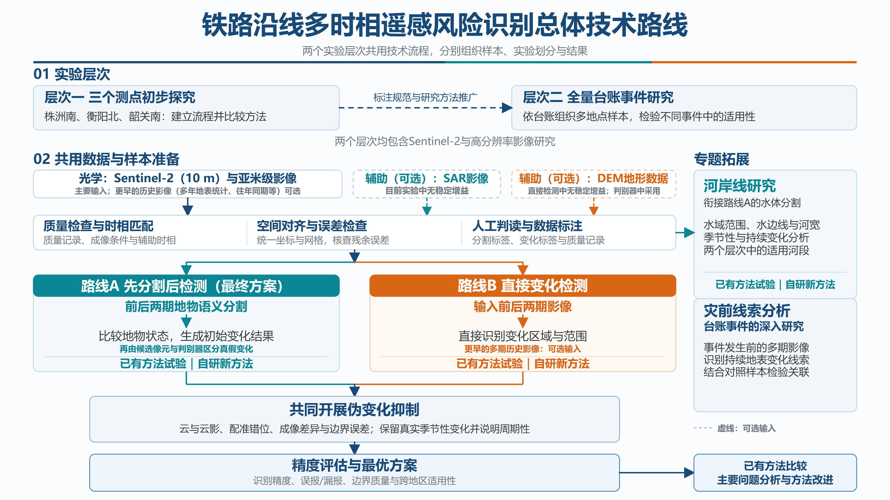
1.2 公开遥感变化检测数据集
变化检测的方法大多是在公开数据集上提出和比较的。了解这些数据集的分辨率、传感器和标注内容，才能判断文献中的成绩能否搬到本研究的条件下（表 1）。
表 1 常用的公开遥感变化检测数据集与本研究数据
| 数据集 | 发表 | 影像与分辨率 | 规模 | 标注内容 | 任务 |
|---|---|---|---|---|---|
| OSCD [20] | Daudt 等，IGARSS 2018 | Sentinel-2，13 个波段（10—60 米，统一到 10 米） | 24 对，官方 14 对训练、10 对测试 | 城市扩张（变化 / 未变） | 二值变化检测 |
| LEVIR-CD [73] | Chen 和 Shi，Remote Sensing 2020 | Google Earth 影像，RGB，0.5 米 | 637 对，每幅 1024 × 1024 像元 | 建筑新增与拆除，约 3.1 万个变化实例 | 二值变化检测 |
| WHU-CD [80] | Ji 等，IEEE TGRS 2019 | 航空影像，RGB，0.3 米 | 一对大图（32,507 × 15,354 像元），2012、2016 年 | 建筑变化 | 二值变化检测 |
| S2Looking [81] | Shen 等，Remote Sensing 2021 | 侧视高分卫星，RGB，0.5—0.8 米 | 5,000 对，每幅 1024 × 1024 像元 | 农村建筑变化，约 6.6 万个实例 | 二值变化检测 |
| SYSU-CD [82] | Shi 等，IEEE TGRS 2022 | 航空影像，RGB，0.5 米 | 20,000 对，每幅 256 × 256 像元 | 建筑、道路、植被、海岸等多类变化（不区分类型） | 二值变化检测 |
| HRSCD [39] | Daudt 等，CVIU 2019 | 航空影像，RGB，0.5 米 | 291 对，每幅 10,000 × 10,000 像元 | 两期五类土地覆盖 + 变化 | 语义变化检测 |
| SECOND [1] | Yang 等，IEEE TGRS 2022 | 航空影像，RGB，0.5—3 米 | 4,662 对，每幅 512 × 512 像元 | 两期六类地物，30 种“从—到”变化 | 语义变化检测 |
| Landsat-SCD [83] | Yuan 等，IJDE 2022 | Landsat，30 米 | 8,468 对，每幅 416 × 416 像元 | 两期地物类别与变化 | 语义变化检测 |
| DynamicEarthNet [54] | Toker 等，CVPR 2022 | Planet 逐日 3 米（另附 Sentinel-1/2） | 75 个区域，2018—2019 年逐月 | 逐月七类土地覆盖 | 时序语义变化 |
| SpaceNet 7 [84] | Van Etten 等，CVPR 2021 | Planet 逐月镶嵌，4 米 | 101 个区域，约 24 个月 | 逐月建筑轮廓及其编号 | 建筑变化追踪 |
| 本研究 | — | Sentinel-2，12 个波段（统一到 10 米） | 511 对，每幅 256 × 256 像元；相邻两期间隔中位数 7 天 | 需要报告的地表变化（逐像元）+ 逐期五类地物 | 二值变化检测（附地物类别） |
与公开数据集相比，本研究数据有四点不同：
- 分辨率低、波段多。多数前沿方法是在 0.3—1 米 RGB 数据（LEVIR-CD、WHU-CD、S2Looking、SECOND）上提出的，F1 已达 0.90—0.94；10 米多光谱的公开数据只有 OSCD，各类方法报告的 F1 只有 0.47—0.60 [20,63]。高分数据上的排名不能直接搬到 10 米数据上。
- 变化更稀少、时间间隔更短。公开数据的两期通常相隔数年，变化像元占比为百分之几；本研究相邻两期多只相隔一周，变化像元只占 0.053%，季节、雾、水位造成的伪变化远多于真实变化。
- 变化类型多。公开二值数据集以建筑变化为主；本研究要检测施工清表、取土弃土、道路、林地砍伐、水域变化等多种扰动，其中相当一部分前后仍属同一类地物（3.2.2 节）。
- 必须按时间外推。公开数据集多为随机划分；本研究按时间先后划分训练和测试，模拟“用过去的数据检测未来”。
OSCD 与本研究使用同一种卫星，因此用它来核对本研究训练与评价流程的正确性（1.5 节）。
1.3 两条技术路线
两条路线代表变化检测的两种基本思路（图 2）。
- 直接变化检测：把前后两期影像一起输入一个深度网络，网络直接输出每个像元的变化概率。它不需要先识别地物，直接学习两期之间的差别；难点是训练样本有限时，网络容易把季节、雾等观测条件造成的差别也当成变化。
- 先分类后比较：先把每一期影像中的每个像元分成五类地物（语义分割），再比较两期。分割告诉我们“这里是什么地物”，结果容易解释；但每一期的分割都有误差，两期直接比较时误差会叠加，并且前后同属一类的变化无法发现。因此在分割之后增加一步：先用宽松的规则选出可能发生变化的像元（候选像元），再由一个分类器（变化检测头）逐个判断这些候选是不是真实变化。
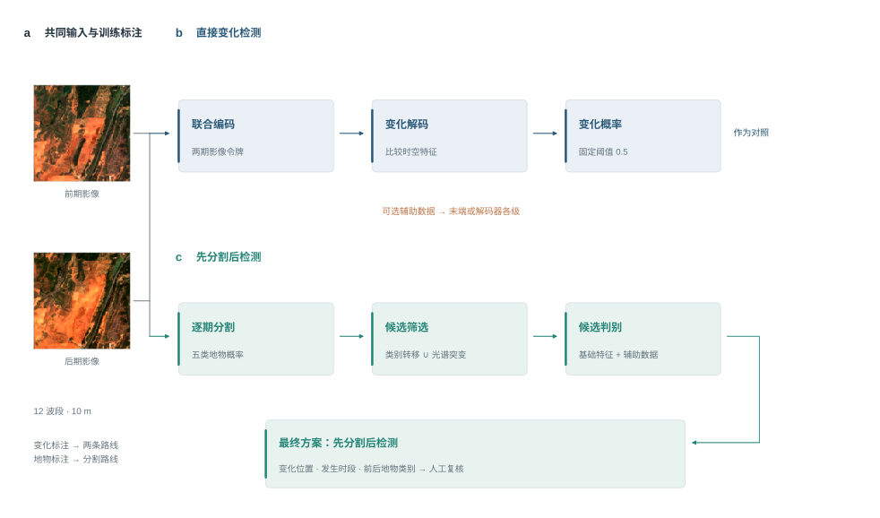
1.4 数据与预处理
本节说明影像、标注和时间划分；辅助数据的获取和处理见 2.5 节。两条检测路线使用同一批影像对、同一套标注和同一个时间划分。
（1）Sentinel-2 影像
- 产品与范围：使用 Sentinel-2 L2A 级地表反射率产品（已做大气校正）。每个测点取 256 × 256 像元，即 2.56 km × 2.56 km，统一到 UTM 49N 投影（EPSG:32649）的 10 米网格上；时间范围为 2021 年 7 月至 2026 年 7 月。组成影像对的影像，株洲南、衡阳北、韶关南分别有 170、199、111 期。
- 波段：使用除卷云波段 B10 以外的全部 12 个波段。其中 10 米分辨率的有 B2（蓝）、B3（绿）、B4（红）、B8（近红外）；20 米的有 B5、B6、B7、B8A（红边）和 B11、B12（短波红外）；60 米的有 B1（气溶胶）和 B9（水汽）。20 米和 60 米的波段用双线性插值重采样到 10 米网格，以便逐像元对应。
- 辐射一致性：欧空局从 2022 年 1 月 25 日起更新了数据处理版本，此后的 L2A 数值整体多了 1000。本研究对此后的影像按“反射率 =（数值 − 1000）/ 10000”换算，对此前的影像按“反射率 = 数值 / 10000”换算，使前后的反射率可以直接比较。
- 云与缺测：每期影像附带云掩膜和缺测掩膜。云掩膜取 L2A 自带的场景分类结果中的云、云影、卷云和无数据四类。一个像元只要在前后任一期被云遮挡或缺测，就不参与训练和评价。配准后可见光波段反射率小于 −0.005 的异常像元同样不参与评价。
- 雾的识别：薄雾不会被场景分类识别为云，但会让可见光反射率整体升高。本研究为每个测点设定阈值，根据茂密植被区蓝光反射率的统计值，自动判断每一期影像是否有雾。这个结果用于成像条件分析（有雾与无雾影像对分开评价）和成像质量数据（表 9）。全部影像中约四分之一的期有雾。
（2）影像对的组成
同一测点云量较少、可以判读的影像按时间排序，相邻两期组成一个影像对，三个测点共 477 对；另有 34 对是判读时为个别变化区域另选了更合适的前期影像而补充的，合计 511 对。两期间隔的中位数为 7 天，338 对不超过 10 天，90% 不超过 32 天。有 241 对的前后两期来自不同的卫星轨道。
（3）前后两期的精确对齐（配准）
两期影像由卫星在不同时间拍摄，可能存在不到一个像元的整体错位。错位会让地物边缘在两期差值图上出现成对的“亮—暗”条纹，被误认为变化 [28,29]。本研究把前期影像对齐到后期影像：
- 分别用近红外 B8 和红光 B4，在陆地区域和含水面区域，用相位相关法估计整幅影像的平移量；
- 在“不移动”“按各单波段估计值移动”“按两者平均值移动”几个方案中，选移动后陆地区域残余错位最小的一个；
- 前期各波段按选定的平移量做三次样条插值移动；云和缺测掩膜同步移动；移出图外的部分记为缺测。后期影像和标注保持不动。
对齐前，整幅影像平移量的中位数为 0.24 个像元，90% 的影像对在 0.73 个像元以内，21 对超过 1 个像元。对齐后，把每对影像分成 64 × 64 像元的小块，逐块测量残余错位：各影像对残余错位中位数的中位值为 0.05 个像元，90% 的影像对不超过 0.07 个像元，99% 不超过 0.11 个像元（图 3，508 个可测量的影像对）。来自不同轨道的影像对与同一轨道的影像对残余错位相同。变化检测文献通常要求配准误差小于 0.2 个像元 [28,29]，本数据满足这一要求。
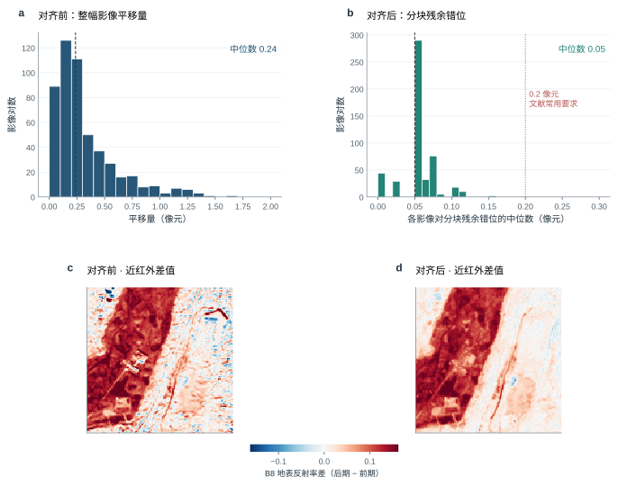
（4）变化标注
变化标注画在后期影像的网格上，每个像元取三种值之一：0 表示没有变化，1 表示变化，255 表示不评价（观察范围以外、被云遮挡或缺测、判读员注明“看不出”）。标注流程是：先由光谱指数规则结合 AI 目视判读标出可能的变化区域（与本研究比较的检测模型无关），判读员再逐片目视判读复核、修改后保存，并给每个变化区域标记类型（新增裸露、植被减少、道路增加、建筑增加、水域增加、水域减少）。标注遵循三条规则：
- 只标需要报告的地表变化；农田正常的耕种收割、林草的季节变化、水色变化，以及雾、阳光反射造成的差异，都不标为变化；
- 同一处变化只在它第一次出现的那一对影像中标为变化，之后的影像对不再重复标；
- 判读员看不清、无法确认的区域，注明“看不出”，记为不评价。
变化与否只看判读员是否确认这里发生了需要报告的变化，不要求前后两期的地物类别不同：林地中的小片砍伐（前后都是植被）、工地上再次开挖填方（前后都是裸露）都算变化。训练和评价都只在标注为 0 或 1 的像元上进行。
全部影像对共有 17,655 个计入评价的变化像元，测试期 5,656 个（表 2）。
（5）五类地物标注
先分类后比较需要每一期的地物类别。地物标注包括水体、植被、耕地、裸露、建成五类，共 424 期。制作流程是：AI 预标，判读员多轮逐像元核查，再检查同一位置前后各期的类别是否合理（例如建成区不会在两周内变回植被）。每一折只用该折训练期和验证期的地物标注训练分割模型。
（6）时间划分
全部影像对按后期影像的日期排序，划分为三个折（表 2）。每一折中，训练集全部早于验证集，验证集全部早于测试集；跨越分界日期的影像对被剔除，前后共用同一期影像的影像对之间留出间隔，避免同一期影像同时出现在训练和测试中。三个折的测试期依次为 2023 年 4—7 月、2023 年 11 月至 2024 年 3 月、2024 年 4 月以后，分别覆盖春夏、秋冬和之后两年多的长期情形。
表 2 按时间滚动的三个折的划分（影像对数 / 计入评价的变化像元数 / 含变化的影像对数）
| 折 | 训练期 | 验证期 | 测试期 | 训练 | 验证 | 测试 |
|---|---|---|---|---|---|---|
| 第一折 | 2022 年 10 月以前 | 2022 年 10 月—2023 年 3 月 | 2023 年 4—7 月 | 114 / 4,251 / 27 | 53 / 747 / 8 | 22 / 784 / 6 |
| 第二折 | 2023 年 10 月以前 | 2023 年 10 月 | 2023 年 11 月—2024 年 3 月 | 210 / 9,964 / 48 | 6 / 1,182 / 1 | 20 / 2,443 / 4 |
| 第三折 | 2023 年 11 月以前 | 2023 年 11 月—2024 年 3 月 | 2024 年 4 月以后 | 221 / 11,506 / 50 | 20 / 2,443 / 4 | 258 / 2,429 / 36 |
本文所有 F1、AP 和 mIoU，都是先在三个折上分别计算、再取平均的结果，下文不再逐一说明。三个折的测试规模差别很大（22、20 和 258 个影像对），取平均让春夏、秋冬和长期三种情形的权重相同；把三个折的像元合在一起计算的结果称为“合并 F1”，按像元数加权。2023 年 8—9 月的影像对只用于训练。
1.5 评价方法
判定阈值。模型对每个像元输出 0—1 之间的变化概率，概率不低于 0.5 的像元判为变化。这与多数变化检测论文的做法一致：网络输出“变化”和“没变”两个分数，取分数高的一类。没有在验证集上调阈值，原因是验证集中含变化的影像对只有 1—8 个，选出的阈值由这几个影像对决定、极不稳定（图 4）：同一个模型在不同折上选出的阈值相差上百倍。验证集只用于决定训练在第几轮停止、学习率取多少。验证集选阈值的成绩放在附录 A。
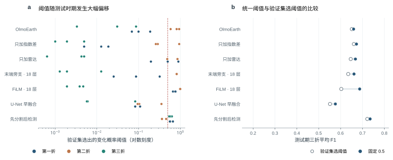
指标。只在标注为 0（没变）或 1（变化）的像元上统计正确报出的变化像元数 TP、误报数 FP、漏报数 FN：
$$P=\frac{TP}{TP+FP},\quad R=\frac{TP}{TP+FN},\quad F1=\frac{2PR}{P+R},\quad \mathrm{IoU}_{\text{变化}}=\frac{TP}{TP+FP+FN}$$
精确率 P 是报出的变化中真实变化所占比例，召回率 R 是真实变化中被报出的比例，F1 是二者的调和平均，为主要指标。平均精度 AP 不依赖阈值：把像元按变化概率从高到低排序，逐一作为阈值计算精确率和召回率，按召回率的增量对精确率加权求和，衡量模型能否把真实变化排在没有变化的像元前面。没有变化的像元占 99.9% 以上，任何方法的总体精度都高于 0.999，无法区分方法好坏 [35,36]，因此变化检测不报总体精度。分割报五类交并比的平均值 mIoU。
重复训练与差异检验。深度网络和变化检测头的结果随随机种子波动，每个配置训练 3 次、报告平均值。比较两个配置时，同时有放回地重抽训练次数和各折内的测试影像对，重复 2,000 次，得到 F1 差的 95% 区间；区间不包含 0 称为差异显著。由于前两个折分别只有 6 个和 4 个测试影像对含有变化，区间普遍较宽。
方案选择。每一步都按测试期的 F1 选出进入下一步的方案（分割比较 mIoU）。这样做是因为验证集太小、选不出稳定的方案，代价是报告的成绩偏乐观，需要用冻结方案后的新时段、新测点做独立检验（4.4 节、5.2 节）。与最高者相差不到 0.005（与随机种子之间的波动相当）视为持平，持平时取更简单的方案（用到的数据更少、融合方式更简单）。同一张表中的配置使用同样的训练标注、训练预算和评价方法。
流程核对。为确认训练与评价流程没有系统性问题，在同为 Sentinel-2 的公开数据集 OSCD 上按官方划分重跑了同一流程（表 3）。经典卷积网络的复现成绩与原论文相近（差 0.05 左右，来自归一化和类别权重等细节）；OlmoEarth 达到 0.685，高于文献中各类方法的 0.47—0.60。这说明后文的成绩差异来自方法和数据本身，而不是流程错误。
表 3 在公开数据集 OSCD 上核对本研究的训练与评价流程（官方 14 对训练、10 对测试，13 个波段；变化类 F1）
| 方法 | 文献报告 | 本研究流程复现 | 说明 |
|---|---|---|---|
| FC-Siam-diff | 0.579 [8] | 0.526 | 逐图归一化、变化类权重 20；未按逐图归一化或不加类别权重时只有 0.2—0.3 |
| FC-EF / U-Net 早融合 | 0.569 [8] | 0.501 | 同上 |
| 自监督与基础模型（SeCo、CACo、SpectralGPT、MTP、SkySense） | 0.469—0.601 | — | 多为 96 × 96 切片 + UNet 头 |
| OlmoEarth + LoRA（本研究直接检测的基础模型） | — | 0.685 | 官方划分、固定概率 0.5、3 次训练平均 |
注：文献数字取自原论文或 SkySense、ChangeViT 等文的对比表，切片与阈值设置不完全相同，只作量级参照。
1.6 实验安排
两条路线都按“先比较方法、再加数据、最后换融合方式”的顺序推进，每一步只改变一个方面。
直接变化检测（第 2 章）：（1）从经典代数方法到遥感基础模型，在只输入两期 12 个波段的条件下比较，再在每个方法上加入光谱指数差；（2）在最好的模型上逐项加入辅助数据；（3）比较辅助数据的融合方式。
先分类后比较（第 3 章）：（1）比较分割模型；（2）在最好的分割模型上逐项加入辅助数据、比较融合方式；（3）在最终分割结果上比较变化检测头，从文献中的传统方法、机器学习方法到深度网络。
表 4 已完成的工作
| 工作 | 内容 | 规模与结果 |
|---|---|---|
| 影像与数据构建 | 下载三个测点的 Sentinel-2 地表反射率影像；生成云和缺测掩膜；前后两期影像精确对齐；12 个波段统一到 10 米网格 | 480 期影像，组成 511 个影像对；对齐后残余错位的中位数为 0.05 个像元 |
| 变化标注 | AI 先自动标出可能的变化区域，判读员逐片目视判读复核，标记变化类型；看不清的区域注明“看不出” | 全部影像对逐像元标注；计入评价的变化像元 17,655 个 |
| 地物标注 | 水体、植被、耕地、裸露、建成五类；AI 预标后多轮逐像元人工核查，并检查同一位置前后各期类别是否合理 | 480 期中的 424 期 |
| 辅助数据 | 往年同期、多年地表统计、地形、Sentinel-1 雷达（振幅与干涉相干性）、逐期光照与阴影、成像质量 | 每类都做了时间对齐、空间对齐和质量控制 |
| 直接变化检测 | 2 种经典方法、13 种深度网络在同一条件下比较，每种网络都做“加 / 不加光谱指数差”对照；OlmoEarth 上逐项加入辅助数据；5 种融合方式 | 见第 2 章 |
| 先分类后比较 | 7 种分割模型比较；D2LS 上逐项加入辅助数据并比较 4 种融合方式；文献方法、机器学习和深度网络三类变化检测头比较 | 见第 3 章 |
| 河岸线研究 | 多年水域范围统计、水边线提取、铁路一侧的河岸断面量测 | 株洲南 31 个、韶关南 26 个断面 |
| 高分辨率核验准备 | 吉林一号存档影像选片与计价 | 93 景，覆盖 60 个“测点 × 季度”中的 53 个 |
| 台账事件分析 | 台账是铁路部门记录沿线隐患和施工事件的清单；对台账事件观察窗口（事件前后最近的影像）逐一目视判读，判断事件在 10 米影像上是否可见 | （只在内部版） |
2 直接变化检测
2.1 方法谱系
直接变化检测把两期影像一起交给一个模型，直接输出每个像元“变没变”。按提出的先后，主要方法可以分为五类（表 5）。
（1）经典代数与变换方法（1980—2010 年前后）。变化向量分析 CVA [5] 把每个像元两期的多波段反射率看成两个向量，二者之差的长度表示变化强度，方向表示变化类型，长度超过阈值即判为变化。IR-MAD [7] 先用典型相关分析找出两期之间相关性最强的波段线性组合，再对二者之差迭代加权，使不变像元主导统计、变化像元更突出。这类方法不需要标注，阈值通常用 Otsu 法 [96] 或期望最大化 [95] 自动确定，至今仍是常用基线。
（2）卷积网络（2018 年起）。Daudt 等 [8] 首次把全卷积 U 形网络用于变化检测，提出三种结构：FC-EF 把两期影像在通道上拼接后输入一个网络（早融合）；FC-Siam-conc 和 FC-Siam-diff 用两份共享参数的编码器（孪生结构）分别提取两期特征，再在每一级跳跃连接处拼接或相减。此后的 SNUNet-CD [9] 用嵌套的密集跳跃连接和通道注意力改善了细小目标的检测。
（3）Transformer（2021 年起）。Transformer 用注意力机制建模影像中相距较远位置之间的关系（2.2.3 节）。BIT [10] 先把两期卷积特征压缩成少量语义 token，用 Transformer 建模它们在时空上的关系，再投影回像元；ChangeFormer [11] 用分层的 Transformer 编码器提取多尺度的两期特征，再逐级求差；Changer [12] 在编码过程中交换两期的部分特征，让两期互相参照。Swin-Unet [85] 是以移位窗口注意力为基础的 U 形网络，原为医学影像分割提出，本研究把两期影像拼接后输入，作为“U 形 Transformer 早融合”的代表。
（4）近两年的新结构（2024—2026 年）。状态空间模型（Mamba）以与影像大小成线性的计算量建模长距离关系：ChangeMamba [13] 设计了顺序、交叉和通道拼接三种时空扫描方式，CDMamba [76] 加入卷积以补充局部细节，Mamba-FCS [55] 进一步融合空间与频率特征。Change3D [56] 把两期影像看作一段只有两帧的视频，用视频模型提取时空特征。ChangeViT [23] 以 DINOv2 自然图像预训练的普通 ViT 为骨干，另加一个卷积分支补充细节。这些方法在 0.3—1 米的高分辨率数据集上 F1 已达 0.90—0.94。
（5）遥感基础模型（2024 年起）。基础模型先在数百万景、多传感器、多时相的卫星影像上做不需要标注的预训练，学到通用的地表特征，再用少量标注适配到具体任务，代表有 Prithvi-EO-2.0 [14]、TerraMind [15]、OlmoEarth [16]。本研究只有三个测点、数百个影像对，从头训练的网络很难学到稳定的地表特征，而预训练模型已经“见过”大量不同地区、不同季节的 Sentinel-2 影像，这是本研究重点使用基础模型的原因。
此外，零样本方法（AnyChange [62]）、单时相监督（ChangeStar [61]）和生成式造数据（Changen2 [74]）针对的是“没有标注”的场景，与本研究“有逐像元标注、10 米多光谱”的条件不同，只作定位，不做比较。
表 5 直接变化检测方法谱系（代表成绩取自原论文，数据集与评价设置各不相同，不能横向比较）
| 类别 | 代表方法 | 出处 | 经典 / 近期 | 核心思路 | 代表成绩（F1） | 本研究 |
|---|---|---|---|---|---|---|
| 代数与变换 | CVA、IR-MAD | Malila 1980 [5]；Nielsen，IEEE TIP 2007 [7] | 经典 | 两期光谱差的长度；典型相关构造互不相关的差异变量 | — | 比较 |
| 时间序列 | CCDC | Zhu 等，RSE 2014 [66] | 经典 | 逐像元谐波模型，残差连续 3 次超限判变 | — | 季节模型借鉴 |
| 卷积孪生 | FC-EF、FC-Siam-diff | Daudt 等，ICIP 2018 [8] | 经典 | 共享编码 + 差分或拼接 + U 形解码 | OSCD 0.569—0.579 | U-Net 早融合比较 |
| U 形 Transformer | Swin-Unet | Cao 等，ECCV Workshops 2022 [85] | 近期 | 移位窗口注意力的 U 形编码—解码（原为医学分割） | — | 改为两期早融合比较 |
| 卷积 + 注意力 | STANet、SNUNet-CD | Remote Sensing 2020 [73]；IEEE GRSL 2022 [9] | 经典 | 时空自注意力；密集连接 + 通道注意力 | LEVIR-CD 0.873—0.882 | SNUNet-CD 比较 |
| Transformer | BIT、ChangeFormer、Changer | IEEE TGRS 2022 [10]；IGARSS 2022 [11]；IEEE TGRS 2023 [12] | 近期 | 语义 token；分层 Transformer；两期特征交换 | LEVIR-CD 0.893—0.904 | BIT、ChangeFormer、Changer 比较 |
| 状态空间模型 | ChangeMamba、CDMamba、Mamba-FCS | IEEE TGRS 2024 [13]；IEEE TGRS 2025 [76]；IEEE JSTARS 2026 [55] | 近期 | 线性复杂度的长程时空建模 | WHU-CD 0.938—0.942 | 三者都比较 |
| 视频与生成模型 | Change3D、DDPM-CD | CVPR 2025 [56]；WACV 2025 [75] | 近期 | 两期当小视频；扩散模型特征 | LEVIR-CD 0.909—0.918 | Change3D 比较 |
| 视觉大模型适配 | SAM-CD、ChangeCLIP、ChangeViT | IEEE TGRS 2024 [71]；ISPRS J 2024 [72]；Pattern Recognition 2026 [23] | 近期 | 通用视觉 / 视觉—语言模型接变化头 | OSCD 0.555（ChangeViT） | ChangeViT 比较 |
| 零样本与少标注 | AnyChange、ChangeStar、Changen2 | NeurIPS 2024 [62]；ICCV 2021 [61]；IEEE TPAMI 2025 [74] | 近期 | 免训练比较；单时相监督；生成训练数据 | 零样本 LEVIR-CD 0.234（AnyChange） | 定位，不比较 |
| 遥感基础模型 | OlmoEarth、TerraMind、Prithvi-EO-2.0 | 2025 [16]；ICCV 2025 [15]；2024 [14] | 近期 | 海量卫星影像预训练，少量参数适配 | OSCD 0.685（本研究流程，OlmoEarth） | OlmoEarth、TerraMind 比较 |
本研究从前五类中各选代表，共 2 种经典方法和 13 种深度网络，在同一套数据、标注、时间划分和训练预算下比较（2.3 节）。
2.2 基础模型怎样用于变化检测：OlmoEarth 变化检测网络
2.2.1 基础模型在这里做什么
OlmoEarth 是美国艾伦人工智能研究所 2025 年发布的开源遥感基础模型 [16]。它的预训练数据是全球范围内同一地点的多期 Sentinel-2、Sentinel-1 和 Landsat 影像；预训练时把影像的一部分遮住，让模型根据看得见的部分去预测被遮住部分的特征。为了完成这一任务，模型必须学会“这一处地表是什么、它的光谱随季节怎样变化、相邻位置之间有什么关系”。预训练完成后，模型的编码器就是一个通用的地表特征提取器：输入任意地点的 Sentinel-2 影像，输出描述每一处地表的特征向量。
本研究对基础模型的用法分三步（图 5）：
- 用编码器提取两期特征。前后两期影像作为一个两期的时间序列一起输入 OlmoEarth 编码器，得到两期的特征图。编码器的预训练参数保持不变。
- 用 LoRA 让编码器适应变化检测。在编码器内部加入少量可训练参数（低秩适配，2.2.4 节），让注意力学会关注两期之间的差别。
- 用解码器输出变化图。新建一个变化解码器，比较两期特征，并把 40 米的特征图逐级恢复到 10 米，输出每个像元的变化概率。
LoRA 参数和解码器参数用本项目的变化标注训练。选择 OlmoEarth 有三点理由：它预训练时就使用 Sentinel-2 L2A 的全部 12 个波段，本项目影像可以原样输入；它本身就处理多期影像，两期在编码器内部直接相互比较；在同条件比较中它的成绩最好（2.3 节）。
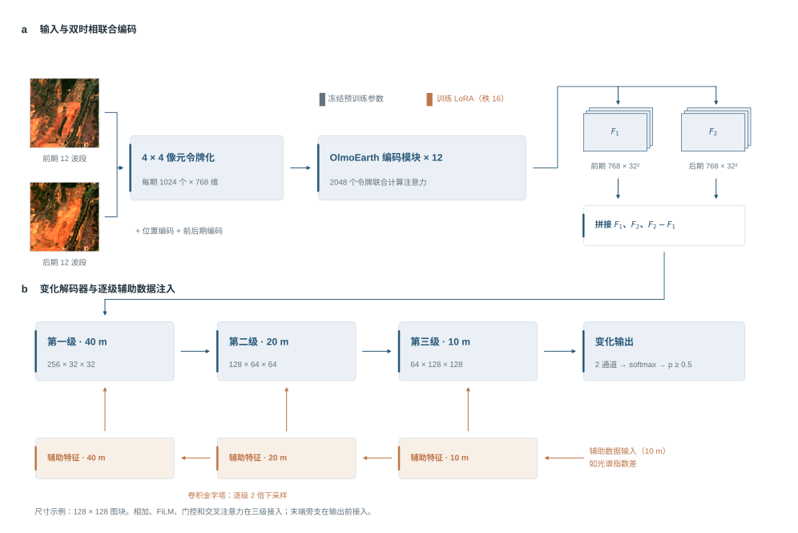
2.2.2 输入、token 与 batch
每一期输入 12 个波段的地表反射率。先乘以 10000 换回 Sentinel-2 产品的原始数值，再按 OlmoEarth 官方给出的每个波段的均值 $\mu_b$ 和标准差 $\sigma_b$ 归一化：
$$\tilde{x}_b=\frac{x_b-(\mu_b-2\sigma_b)}{4\sigma_b}$$
使输入的取值分布与预训练时相同。
token。Transformer 不直接处理像元，而是处理一个个向量，称为 token。视觉 Transformer [89] 的做法是把影像切成互不重叠的小图块（patch），每个图块的全部数值拉成一列，经一次线性变换（patch embedding）成为一个固定长度的向量，即一个 token。OlmoEarth 的图块为 4 × 4 像元：一个图块有 12 个波段 × 16 个像元 = 192 个数值，线性投影为 768 维的 token，代表地面上 40 米 × 40 米的范围。一块 128 × 128 像元的训练图块因此变成 32 × 32 = 1,024 个 token，两期共 2,048 个。每个 token 还加上位置编码（它在影像中的行列位置）和时间编码（它属于前期还是后期），使模型能区分“哪里”和“什么时候”。
batch。batch（批）是训练时一次送入网络、共同计算一次梯度的样本数，与 token 无关。本研究每批 8 个训练图块，每个图块各自含有 2,048 个 token。
2.2.3 编码器：注意力怎样比较两期
编码器由 12 层 Transformer 组成，每层的核心是自注意力 [90]。直观地说，注意力让每个 token 去“查看”其他所有 token，根据相关程度决定从谁那里汇集多少信息。由于前后两期的 token 在同一层里一起计算，后期某处的 token 可以直接查看前期同一位置及周围的 token——这正是判断“这里变没变”需要的信息。
计算上，每个 token 经三个线性变换得到查询向量 $Q$、键向量 $K$ 和值向量 $V$：
$$\mathrm{Attention}(Q,K,V)=\mathrm{softmax}\!\left(\frac{QK^{\mathsf T}}{\sqrt{d}}\right)V$$
$QK^{\mathsf T}$ 是每对 token 之间的相关程度，除以向量维数 $d$ 的平方根以稳定数值，softmax 把相关程度转换成合计为 1 的权重，每个 token 按这些权重对所有 token 的 $V$ 加权求和，得到更新后的自身。12 层依次叠加，每个 token 包含的信息从本图块的光谱逐步扩展到更大范围的地物结构和两期之间的对应关系。
2.2.4 低秩适配（LoRA）
编码器有约 1.15 亿个参数。本项目只有数百个影像对，如果全部更新，很容易过拟合（记住训练数据，对新数据效果差）。低秩适配 LoRA [22] 的做法是：预训练参数矩阵 $W$ 保持不变，只在旁边加一个由两个小矩阵相乘得到的增量：
$$W'=W+\frac{\alpha}{r}BA,\qquad A\in\mathbb{R}^{r\times d},\;B\in\mathbb{R}^{d\times r},\;r=16,\;\alpha=16$$
$A$ 把 768 维压缩到 16 维，$B$ 再映射回 768 维，二者都是可训练参数；$B$ 的初始值为零，所以训练开始时网络与预训练模型完全相同。本研究把 LoRA 加在每层注意力的 $Q$ 和 $V$ 两个变换上，需要训练的编码器参数只有约 59 万个，约为原来的 0.5%。这样既保留了预训练学到的地表特征，又能让注意力朝“关注两期差别”的方向调整。
2.2.5 变化解码器
编码器输出前期特征 $F_1$ 和后期特征 $F_2$，每个 40 米位置各 768 维。解码器先把两期特征和它们的差值拼接：
$$H=[F_1,\;F_2,\;F_2-F_1]$$
共 2,304 维。差值直接表示“朝什么方向变了”；保留两期原特征，是让解码器还知道“原来是什么、后来是什么”，从而区分同样幅度的不同变化（例如植被变裸土与水面退缩）。这种拼接与 ChangeViT [23] 等网络相同。之后分三级恢复分辨率：
- 第一级（40 米）：1 × 1 卷积把 2,304 维压缩为 256 维；
- 第二级（20 米）：放大 2 倍，3 × 3 卷积降为 128 维；
- 第三级（10 米）：再放大 2 倍，3 × 3 卷积降为 64 维，再经一层 3 × 3 卷积整理相邻像元的关系；
- 输出：1 × 1 卷积输出“没变”和“变化”两个分数，经 softmax 得到变化概率。
3 × 3 卷积在放大的同时利用邻域信息，学习变化区的边界和连续性。需要注意，放大恢复的是输出网格，并没有获得比 10 米更精细的观测。
2.2.6 损失函数与训练设置
损失为交叉熵与 Dice 损失之和：
$$L=L_{\text{CE}}+L_{\text{Dice}},\qquad L_{\text{Dice}}=1-\frac{2\sum_i p_iy_i+\epsilon}{\sum_i p_i+\sum_i y_i+\epsilon}$$
$p_i$ 为像元 $i$ 的变化概率，$y_i$ 为标注。交叉熵让每个像元的概率接近标注；Dice 损失衡量预测变化区与标注变化区的重叠程度，在变化像元极少时仍然有效 [27]。“不评价”像元不参与损失。
训练中加入难负样本：标注为没变、但两期光谱指数差很大的像元（稳健标准化后绝对值不小于 3）。这类像元正是雾、季节和水位造成的伪变化，最容易被误报；它们的交叉熵损失乘以 5，切取训练图块时也有一半对准这类像元。其余设置见表 6。
表 6 OlmoEarth 直接变化检测的训练与推理设置
| 项目 | 设置 |
|---|---|
| 训练图块 | 128 × 128 像元。含变化的影像对被抽到的概率是其他影像对的 3 倍；从含变化的影像对切图块时，一半保证包含一个随机选取的变化像元；其余图块中，一半保证包含一个难负样本，另一半随机切取 |
| 数据增强 | 随机水平 / 垂直翻转和 90° 旋转，前后两期同步变换 |
| 优化器 | AdamW；学习率 3×10⁻⁴，前 3 轮逐步升高，之后按余弦曲线降到 1%；权重衰减 10⁻⁴ |
| 批大小与轮数 | 每批 8 个图块，每轮 50 批；最多 80 轮、至少 20 轮；验证集 F1 连续 20 轮不提高即停止，取验证集 F1 最高的一轮 |
| 推理 | 对整幅 256 × 256 像元影像，以 128 × 128 的窗口、每次移动 64 像元滑动预测，重叠部分取平均；变化概率不低于 0.5 判为变化 |
2.3 方法比较：只用 12 个波段，还是另加光谱指数差
光谱指数差。指数差是 NDVI [30]、NDWI [31]、MNDWI [32]、BSI [33]、短波红外减近红外、可见光亮度 6 个量的后期减前期，每个影像对内做稳健标准化（定义见表 9）。它完全由两期的波段算出，不引入新的观测，因此不算辅助数据；它的作用是把“植被、水、裸土朝哪个方向变了”这一领域知识直接交给网络。每种方法都做“只输入两期 12 个波段”和“另加指数差”两种，其余设置完全相同，各训练 3 次。
统一的融合方式。为使各方法可比，指数差一律用同一种融合方式：在网络输出端做残差修正（输出端融合）。6 层指数差 $\Delta I$ 经一个小卷积分支 $g$（3 × 3 卷积到 32 通道、ReLU、1 × 1 卷积到 1 通道）得到一个修正量，加到变化类的分数上：
$$z_1'=z_1+g(\Delta I),\qquad z_0'=z_0$$
$z_0$、$z_1$ 是原网络输出的“没变”和“变化”分数。$g$ 的最后一层权重和偏置从 0 开始学习，训练开始时网络与不加指数差的网络完全相同，只有指数差确实能减少训练误差时修正量才会离开 0。这种“残差 + 零初始化”的写法来自残差网络 [99] 和 ControlNet [88]，对任何网络结构都适用，不需要改动作者的网络。ChangeMamba、Mamba-FCS、Change3D、ChangeViT、BIT、ChangeFormer、Changer、CDMamba 的骨干只接受 3 个通道，12 个波段先经一层可学习的 1 × 1 卷积映射为 3 个通道（初始化为真彩色 B4、B3、B2）。
表 7 直接变化检测方法比较（固定概率 0.5；3 次训练平均，不足 3 次的注明；F1 差为加指数差减只用 12 波段，括号内为 95% 区间，＊表示区间不含 0）
| 类别 | 方法 | 出处 | 只用 12 波段：精确率 | 召回率 | F1 | 加光谱指数差：精确率 | 召回率 | F1 | F1 差（95% 区间） | 训练训练设置 |
|---|---|---|---|---|---|---|---|---|---|---|
| 经典代数与变换 | CVA 变化向量分析 | Malila，1980 [5] | 0.022 | 0.211 | 0.037 | — | — | — | — | 不训练 |
| 经典代数与变换 | IR-MAD | Nielsen，2007 [7] | 0.009 | 0.115 | 0.014 | — | — | — | — | 不训练 |
| 卷积网络 | U-Net 早融合（ResNet-34） | Daudt 等，2018 [8] | 0.725 | 0.494 | 0.576 | 0.807 | 0.409 | 0.536 | −0.040（−0.093 至 +0.072） | 难负样本加权，3×10⁻⁴ |
| 卷积网络 | SNUNet-CD | Fang 等，2022 [9] | 0.381 | 0.474 | 0.340 | 0.482 | 0.467 | 0.440 | +0.100（+0.006 至 +0.139）＊ | 不加难负样本，1×10⁻⁴ |
| Transformer | BIT | Chen 等，2022 [10] | 0.244 | 0.237 | 0.216 | 0.385 | 0.238 | 0.273 | +0.057（−0.010 至 +0.095） | 不加难负样本，1×10⁻⁴ |
| Transformer | ChangeFormer（MiT-B0） | Bandara 等，2022 [11] | 0.604 | 0.408 | 0.474 | 0.635 | 0.396 | 0.475 | +0.000（−0.042 至 +0.052） | 不加难负样本，1×10⁻⁴ |
| Transformer | Changer（ResNet-18） | Fang 等，2023 [12] | 0.427 | 0.295 | 0.332 | 0.527 | 0.328 | 0.389 | +0.057（−0.019 至 +0.105） | 不加难负样本，1×10⁻⁴ |
| Transformer | Swin-Unet（早融合） | Cao 等，2022 [85] | 0.394 | 0.363 | 0.361 | 0.437 | 0.417 | 0.404 | +0.043（−0.015 至 +0.117） | 不加难负样本，1×10⁻⁴ |
| 近期模型 | ChangeMamba（MambaBCD-Small） | Chen 等，2024 [13] | 0.515 | 0.346 | 0.392 | 0.633 | 0.360 | 0.435 | +0.043（−0.014 至 +0.095） | 不加难负样本，1×10⁻⁴ |
| 近期模型 | CDMamba | Zhang 等，2025 [76] | 0.409 | 0.497 | 0.412 | 0.466 | 0.437 | 0.426 | +0.014（−0.070 至 +0.111） | 不加难负样本，1×10⁻⁴ |
| 近期模型 | Mamba-FCS | Wijenayake 等，2026 [55] | 0.527 | 0.480 | 0.482 | 0.637 | 0.555 | 0.578 | +0.096（+0.028 至 +0.186）＊ | 不加难负样本，1×10⁻⁴ |
| 近期模型 | Change3D | Zhu 等，2025 [56] | 0.643 | 0.503 | 0.556 | 0.735 | 0.537 | 0.611 | +0.056（−0.047 至 +0.142） | 不加难负样本，3×10⁻⁴ |
| 近期模型 | ChangeViT（DINOv2 ViT-S） | Zhu 等，2026 [23] | 0.482 | 0.519 | 0.458 | 0.573 | 0.507 | 0.515 | +0.056（−0.027 至 +0.126） | 不加难负样本，2×10⁻⁴ |
| 遥感基础模型 | TerraMind + LoRA | Jakubik 等，2025 [15] | 0.778 | 0.202 | 0.307 | — | — | — | — | 难负样本加权，3×10⁻⁴ |
| 遥感基础模型 | OlmoEarth + LoRA | Ai2，2025 [16] | 0.740 | 0.601 | 0.659 | 0.764 | 0.583 | 0.658 | −0.002（−0.070 至 +0.029） | 难负样本加权，3×10⁻⁴ |
| 遥感基础模型 | OlmoEarth + LoRA，指数差多尺度相加（直接检测最终方案） | 2.6 节 | 0.740 | 0.601 | 0.659 | 0.789 | 0.639 | 0.703 | +0.043（+0.004 至 +0.105）＊ | 难负样本加权，3×10⁻⁴ |
注：除最后一行外，光谱指数差一律用同一种融合方式——6 层指数差经 3×3 卷积（32 通道）、ReLU、1×1 卷积得到一个修正量，加到变化类的输出分数上，最后一层从 0 开始学习（2.3 节）。同一方法两列之间只差这一项，是严格对照；不同方法之间训练训练设置不完全相同（末列），跨方法的差别不全是结构造成的。CVA、IR-MAD 不使用标注，阈值在训练和验证影像对上选定。
结果（表 7）：
- OlmoEarth 在两种输入下都最好。只用 12 个波段时为 0.659，比其他方法都高；加指数差的最好融合方式（多尺度相加，2.6 节）为 0.703。其次是 Change3D 和 U-Net 早融合；SNUNet-CD、BIT、Swin-Unet、ChangeMamba 等在高分辨率数据上表现突出的方法，在本项目 10 米、数百个影像对的条件下都明显落后。这与 PANGAEA 的统一评测 [63] 和 Corley 等的复现 [21] 一致：训练条件相同时，新网络不一定比简单的 U-Net 好，预训练数据与任务是否匹配往往比网络结构更重要。
- 指数差对多数方法有帮助，但只有部分能确认。统一用输出端融合的 12 种方法中，9 种加指数差后 F1 提高，其中区间不含 0 的只有 SNUNet-CD（+0.100）、Mamba-FCS（+0.096）。U-Net 早融合用输出端融合加指数差为 0.536，反而低于只用 12 个波段（0.576）；而把指数差在输入端与 12 个波段拼接时为 0.594。OlmoEarth 也一样：用输出端融合加指数差为 0.658，与只用 12 个波段（0.659）几乎相同，改为多尺度相加后才提高到 0.703（2.6 节）——同一份指数差，融合方式不同、结果不同。SNUNet-CD、Mamba-FCS 都要把 12 个波段压成 3 个通道才能输入，压缩会丢掉部分近红外和短波红外信息，指数差把这部分信息以“变化方向”的形式补了回来。
- 经典方法不可用。CVA、IR-MAD 即使在训练与验证集上选阈值，F1 也只有 0.037、0.014。变化像元只占 0.05%，季节、雾和光照造成的光谱差远多于真实变化，单靠“变化幅度”无法区分。
2.4 结果图
结果图一律从 OlmoEarth 表现最好的测试影像对中选取：测试期变化像元不少于 30、有效像元不少于一半的影像对，按 OlmoEarth（第一个种子）整个影像对的 F1 从高到低，每个测点最多 2 对。
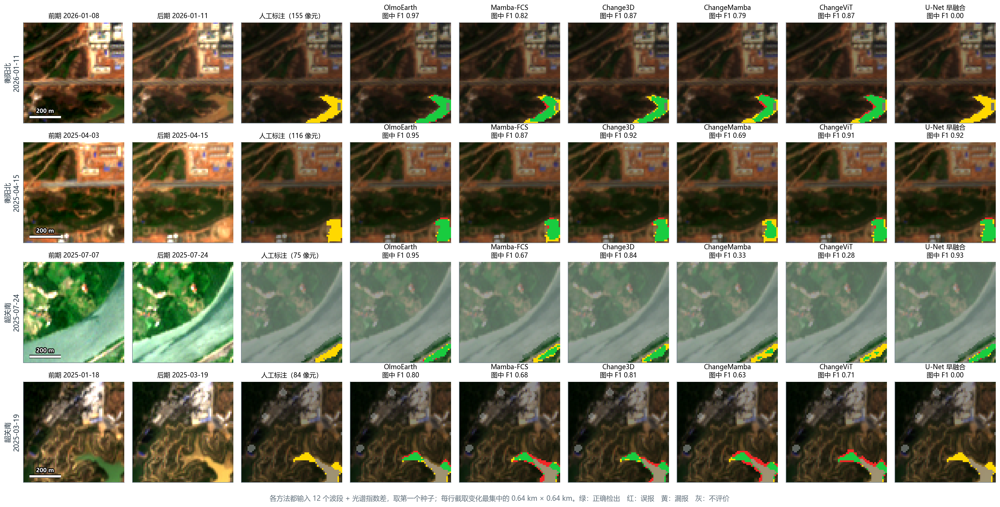
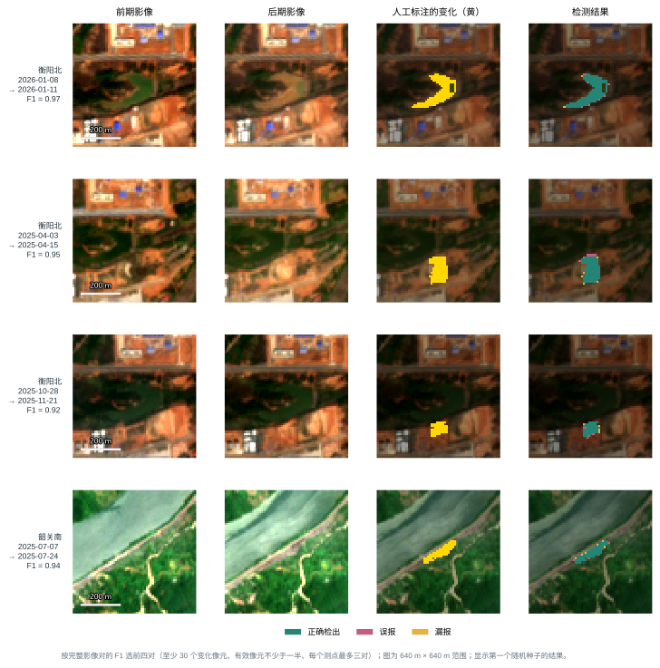
2.5 辅助数据
2.5.1 获取与处理
辅助数据是两期 Sentinel-2 影像以外、需要另外获取或另外计算的观测与背景，用来回答两期影像本身难以回答的问题：这里的变化是不是季节性的？这里的地形会不会造成阴影？这一期是不是受到了雾的干扰？表 8 列出每类数据的来源与处理，逐层定义见表 9。
表 8 辅助数据的获取、处理与对齐（光谱指数差由两期波段算出，不属于辅助数据，见 2.3 节）
| 类别 | 回答什么问题 | 数据来源 | 处理方法 | 时间对齐 | 空间对齐与质量控制 |
|---|---|---|---|---|---|
| 往年同期（7 层） | 当前状态与往年同季相比是否异常 | Sentinel-2 L2A 历史影像 | 取至少早 300 天、年内日期相差 ≤30 天的无云影像，逐像元求中位数与中位数绝对偏差（下限 0.02），算 NDVI、MNDWI、BSI 的偏离 | 只用对应日期以前的影像 | 与测点网格对齐；往年观测 < 3 次或当期有云记 0 |
| 多年地表统计（7 层） | 这里多年来通常是什么地表 | Sentinel-2 L2A 历史影像 | 前期及以前全部无云观测的水体频率、NDVI 10%/50%/90% 分位数、BSI 中位数、耕作周期年份比例、观测次数 | 只用前期及以前 | 观测 < 3 次记 0 |
| 地形（5 层） | 地形位置、有没有陡坡 | 哥白尼 30 米 DEM [34] | 双线性重采样到 10 米，算相对高程、坡度、坡向正余弦、局部起伏 | 静态（2011—2015 年测量） | 原始分辨率 30 米 |
| Sentinel-1 雷达（6 层） | 不受云雾影响的后向散射变化 | Planetary Computer 的 Sentinel-1 RTC（已地形校正） | VV、VH 及其比的前后分贝差 / 3；多出天数；有效标记 | 主方法：只用过去——前后两期光学影像之前 1—12 天内同轨最近一景；诊断：前后包夹、同一轨道、两端各 ≤12 天（要等以后的雷达） | 按轨道整体校正 21—50 米的系统错位，残差 ≤0.12 像元 |
| 逐期光照与阴影（6 层） | 两期太阳高度不同造成的明暗和阴影 | 成像时刻 + DEM | 计算 cos i 与山体投射阴影及其两期差 | 与成像时刻一一对应 | 由 DEM 计算 |
| 成像质量（15 层） | 这一对影像的观测条件是否可靠 | L2A 场景分类、元数据 | 厚云、薄云、云影、缺测标记；跨轨、有雾、耀斑风险、间隔天数、配准平移量 | 与两期一一对应 | 与测点网格对齐 |
| 季节模型（第 1 版，只做诊断） | 当期偏离这个像元自己的季节规律多少 | Sentinel-2 L2A 历史影像 | 仿 CCDC，前 3 年谐波拟合，当期残差标准化 | 只用前期以前 | 与测点网格对齐 |
| 雷达干涉相干性（只做诊断） | 地表结构是否被扰动（相干性下降） | ASF HyP3 处理 828 个相邻相干对 | 逐 burst、20 米，损毁代理图 Δγ | 包住光学两期的相干对 | 逐景质检，重采样到 10 米网格 |
表 9 各类辅助数据的逐层内容（按进入模型的顺序编号）
| 数据 | 层数 | 逐层内容 | 用在哪条路线 |
|---|---|---|---|
| 光谱指数差 | 6 层 | ① NDVI 差；② NDWI 差；③ MNDWI 差；④ BSI 差；⑤ 短波红外减近红外（B11 − B8）之差；⑥ 可见光亮度（B2、B3、B4 均值）之差。均为后期减前期；每个影像对在两期都无云、无缺测的像元上减中位数、除以 1.4826 倍中位数绝对偏差，截到 ±6 后除以 6；云和缺测处为 0 | 直接检测（第二至四步） |
| 往年同期 | 7 层 | ① 后期 NDVI 相对往年同季的偏离；② 后期 MNDWI 的偏离；③ 后期 BSI 的偏离；④—⑥ 前期的同样三项；⑦ 后期可用的往年同季观测数（各像元的中位数 / 10，截到 1）。往年同季 = 早于该期至少 300 天、年内日序相差不超过 30 天的无云观测；偏离 =（当期值 − 往年逐像元中位数）/（1.4826 × 往年中位数绝对偏差，下限 0.02），截到 ±6 后除以 6；往年观测不足 3 次或当期有云的像元为 0 | 直接检测；分割（输入端，只给后期影像） |
| 多年地表统计 | 7 层 | ① 水体出现频率（MNDWI > 0.1 且 NDVI < 0.2 的观测所占比例）；② NDVI 的 10% 分位数；③ NDVI 中位数；④ NDVI 的 90% 分位数；⑤ BSI 中位数；⑥ 有“一绿一裸”耕作周期的年份比例（某年至少 4 次无云观测、NDVI 最高 ≥ 0.6 且最低 ≤ 0.3，记为一个耕作年）；⑦ 无云观测次数 / 50（截到 1）。只用该影像对前期（含）以前的无云观测；观测不足 3 次的像元 ①—⑥ 为 0 | 直接检测（FiLM）；分割（输入端）；变化检测头 |
| 地形 | 5 层 | ① 相对高程（高程减测点中位数后 / 50 米，截到 ±1）；② 坡度 / 45°；③ 坡向正弦；④ 坡向余弦（③④ 乘以 min(坡度 / 10°, 1)，平地为 0）；⑤ 局部起伏 / 30 米（截到 1）。同一测点各影像对相同，不随时间变 | 直接检测；分割（输入端）；变化检测头 |
| 雷达（前后包夹、同一轨道；只做诊断） | 6 层 | ① VV 后向散射差；② VH 后向散射差；③ 交叉极化比（VH − VV）差（①—③ 为后侧景减前侧景的分贝差 / 3，截到 ±3）；④ 前侧景早于前期光学影像的天数 / 12；⑤ 后侧景晚于后期光学影像的天数 / 12；⑥ 有效标记（1 = 有符合规则的雷达）。前侧景 = 前期当天或之前同一轨道最近的一景，后侧景 = 后期当天或之后同一轨道的第一景，两端各不超过 12 天；按轨道校正整体错位，3 × 3 去斑；无效处 ①—⑤ 为 0 | 直接检测 |
| 原生雷达（只做诊断） | 2 景 × 2 极化 | ① 前侧景 VV；② 前侧景 VH；③ 后侧景 VV；④ 后侧景 VH（前侧景、后侧景同“雷达（前后包夹、同一轨道）”；分贝值，不去斑，按 OlmoEarth 预训练的方式归一化）。作为 OlmoEarth 的 Sentinel-1 输入，与两期光学影像一起进入编码器；没有符合规则的雷达处按缺测屏蔽 | 直接检测（进入编码器） |
| 雷达（只用过去，主方法） | 6 层 | 与“前后包夹”相同的 6 层，但前侧景、后侧景分别取前期、后期光学影像之前 1—12 天内同一轨道最近的一景（不能是同一景）；④⑤ 改为两景各早于对应光学影像的天数 / 12。499 个影像对中 265 个有符合规则的雷达 | 直接检测（多尺度相加） |
| 逐期光照与阴影 | 6 层 | ① 前期局部光照 cos i；② 后期 cos i；③ 二者之差；④ 前期投射阴影标记；⑤ 后期投射阴影标记；⑥ 二者之差。由每景成像时刻的太阳天顶角、方位角和哥白尼 30 米数字表面模型计算；投射阴影沿太阳方向最远追 1 千米，cos i ≤ 0 的自阴影也算阴影 | 直接检测 |
| 成像质量 | 15 层 | ①—④ 前期厚云、薄云、云影、缺测标记；⑤—⑧ 后期同样四项（以上逐像元）；⑨ 是否跨轨道；⑩ 前期有雾；⑪ 后期有雾；⑫ 前期水面耀斑风险；⑬ 后期水面耀斑风险（由太阳镜面反射方向与卫星观测方向的夹角换算：60° 以上为 0，20° 以下为 1）；⑭ 两期相隔天数（ln(1 + 天数) / ln 131）；⑮ 前期影像配准平移量（像元数 / 2，截到 1）。⑨—⑮ 每个影像对一个值 | 直接检测（FiLM） |
| 真实拍摄日期 | 时间编码 | 两期影像各自的实际成像日（日、月、年）作为 OlmoEarth 的时间编码；默认把两期固定写成 2023 年 6 月 15 日和 7 月 15 日 | 直接检测（OlmoEarth 时间编码） |
| 前期之前 2 期影像 | 2 期 × 12 波段 | 前期之前 90 天内最近的 2 期影像（测点范围内云和缺测比例低于 20%，无雾的优先）的 12 个波段，按近红外 B8 相位相关配准到后期网格；与前后两期一起作为 4 个时间步进入 OlmoEarth 编码器（同时使用真实拍摄日期），变化特征仍取前后两期；不足 2 期时用前期影像补位 | 直接检测（进入编码器） |
| 当期无云标记 | 1 层 | ① 该期影像每个像元是否无云（1 = 无云） | 分割（输入端） |
| 前一期影像 | 13 层 | ①—⑫ 同一测点早于当期、相隔不超过 180 天、整幅无云比例不低于 20% 的最近一期影像的 12 个波段；⑬ 该期逐像元无云标记。没有符合条件的影像时全为 0 | 分割（输入端） |
| 当期光谱指数 | 6 层 | ① NDVI；② NDWI；③ MNDWI；④ BSI；⑤ NDBI（(B11 − B8) / (B11 + B8)）；⑥ 可见光亮度（B2、B3、B4 均值 × 5）。由当期 12 个波段计算，截到 ±1.5 | 分割（在分割最终方案上再加） |
| 相对前一期的指数差 | 6 层 | ①—⑥ “当期光谱指数”6 项的当期减前一期（前一期取法同“前一期影像”）；在两期都无云的像元上减中位数、除以 1.4826 倍中位数绝对偏差，截到 ±6 后除以 6；有云或没有前一期处为 0 | 分割（在分割最终方案上再加） |
注：直接检测、分割、变化检测头用到的光谱指数差、往年同期、多年地表统计和地形是同一份数据。分割输入中，多年地表统计的观测次数和往年同期的往年观测数各再复制一个通道（多年地表统计共 8 个通道、往年同期共 8 个通道）；往年同期含后期影像的偏离，只在后期影像上提供，预测前期影像时整组置零。变化检测头除这里的辅助数据外，还有由两期影像和分割结果算出的特征，逐项见表 24。
雷达只用后期光学影像之前的观测。本研究判断的是当期变化，检测时不能等待以后的影像。因此雷达只取不晚于光学影像的观测：对前后两期光学影像，各取其之前 1—12 天内、同一轨道的最近一景 Sentinel-1 影像，两景之差作为雷达变化。同一轨道保证两景的入射角相同，不会因观测几何不同产生虚假差异。按这一规则，499 个影像对中 265 个（53%）的影像对有可用的雷达数据。它的代价是：后景雷达之后、后期光学影像之前发生的变化，雷达看不到。此前用“后景晚于后期光学影像”的包夹规则做过诊断（能保证雷达覆盖整个光学时段），但它要等待以后的雷达，不能用于主方法，只作为信号可见性的参照。
2.5.2 数据诊断：能否看见变化，换测点是否成立
接入模型之前，先做两项与模型无关的检查（只做诊断，不用于选方案）：
- 能否看见变化。逐个检查人工标注的变化斑块在这项数据上是否明显异常。光谱指数差能看见 81% 的斑块（按像元加权 91%），往年同期 33%，雷达振幅只有 12%，雷达干涉相干性更少。雷达看不见多数变化有两个原因：有效分辨率约 20—30 米，而多数变化只有 1—3 个像元宽；雷达两景间隔的中位数为 18 天，期间的耕作、水位起落都混在一起。
- 换一个测点还有没有判别力。单独用这项数据区分变化与不变，同测点和换测点各算一次 ROC 曲线下面积（0.5 表示没有信息）。光谱指数差同测点 0.990、换测点 0.984，几乎不变；雷达 0.756 和 0.775，也稳定；而多年地表统计 0.635 → 0.381、地形 0.743 → 0.451、离铁路距离 0.466 → 0.364，换测点后接近或低于 0.5——这些静态数据在同一测点内“有用”，实际上是记住了位置。
对照成熟业务系统的规范用法（表 10）：质量信息（云、雾、耀斑）用来做掩膜或样本权重，DEM 用来做地形和光照校正，历史观测用来定义“正常范围”、判别时只看偏离，距离和季节用来分层评价；而本研究把它们直接当作网络输入，这是文献中最容易记住位置的用法。
表 10 辅助数据：数据诊断结果、成熟系统的规范用法与我们的差距（数据诊断只做诊断，不用于选方案；ROC 面积 0.5 表示没有信息）
| 数据 | 单独用：同测点 / 换测点 ROC | 变化斑块可见率 | 成熟系统的规范用法 | 我们现在的用法 | 判断与改法 |
|---|---|---|---|---|---|
| 光谱指数差（对照，不属辅助数据） | 0.990 / 0.984 | 81% | 标准做法 | 后期减前期，按影像对稳健标准化 | 保留 |
| 往年同期 | 0.798 / 0.773 | 33% | DIST-ALERT [67]：前 3 年同窗口 ±15 天的下界，≥4 次观测，有确认机制 | 中位数 + MAD，≥3 次，±30 天，单期 | 物候错开就报 |
| 季节模型 | — | 60%（第 1 版） | CCDC / COLD [66]：稳定段拟合、按观测数分阶、连续多次确认 | 固定 3 年、2 阶、单期判定 | 唯一换测点仍有增益（+0.044）；按规范修第 2 版 |
| 雷达振幅 | 0.756 / 0.775 | 12% | 多年同季基线 + 持续异常、多时相去斑、几何掩膜、门控或决策级融合 [68] | 两景差 + 3×3 均值 | 文献中最弱的配置；改基线 z + 持续异常 |
| 雷达相干性 | — | 比振幅更少 | 损毁代理图（相干性下降），只在原本高相干处有效 | 已完成可见性诊断 | 不接入模型 |
| 多年地表统计 | 0.635 / 0.381 | — | 历史只定义“正常”，判别只接偏离量；先验图易被照搬 [65] | 直接当判别特征；分割输入 | 换测点低于随机，是位置记忆；只留在分割中 |
| 地形 | 0.743 / 0.451 | — | 用于光照和雷达校正、几何掩膜、水体 HAND 先验，不当原始特征 | 5 层当特征 | 测点平、斑块小于 DEM 格，移出特征 |
| 逐期光照 | 0.614 / 0.653 | — | 预处理校正或后处理剔除 | cos i 当特征 | 测点平，作用小 |
| 成像质量 | 0.573 / 0.546 | — | 逐像元掩膜或样本权重；云掩膜用标准算法 | 影像对级常数当特征 | 改为逐像元质量掩膜、分层评价 |
| 离铁路距离 | 0.466 / 0.364 | — | 用于分层评价和采样 [69] | 当特征 | 换测点有害，移出 |
注：数据诊断数字来自 辅助数据诊断_1030\全部辅助数据核查_1030.md；“换测点”为用两个测点训练、第三个测点检验；文献依据见 文献排查_1030 的四份调研。
2.5.3 接入模型的结果
以直接检测最终方案（OlmoEarth + 光谱指数差，多尺度相加）为基准，每次再加一项辅助数据，融合方式同样是多尺度相加，其余设置完全相同，各训练 3 次，尚未训练完的在表中注明次数（表 11）。
表 11 OlmoEarth 上逐项加入辅助数据的结果（全部用多尺度相加接入解码器；差值相对“＋光谱指数差”，括号内为 95% 区间，＊表示区间不含 0）
| 输入 | F1 | AP | 精确率 | 召回率 | F1 差（95% 区间） | 训练次数 |
|---|---|---|---|---|---|---|
| 只输入两期 12 个波段 | 0.659 | 0.683 | 0.740 | 0.601 | — | 3 |
| ＋光谱指数差（6 层） | 0.703 | 0.739 | 0.789 | 0.639 | （基准） | 3 |
| ＋指数差＋往年同期 | 0.644 | 0.703 | 0.808 | 0.550 | −0.059（−0.168 至 −0.002）＊ | 3 |
| ＋指数差＋多年地表统计 | 0.660 | 0.707 | 0.784 | 0.585 | −0.043（−0.116 至 +0.005） | 3 |
| ＋指数差＋地形 | 0.656 | 0.728 | 0.787 | 0.586 | −0.047（−0.130 至 +0.010） | 3 |
| ＋指数差＋逐期光照 | 0.663 | 0.716 | 0.787 | 0.579 | −0.040（−0.115 至 +0.000） | 3 |
| ＋指数差＋成像质量 | 0.676 | 0.710 | 0.787 | 0.598 | −0.026（−0.067 至 +0.021） | 3 |
| ＋指数差＋雷达（只用后期光学影像之前的雷达） | 0.627 | 0.709 | 0.769 | 0.559 | −0.076（−0.137 至 −0.027）＊ | 3 |
| ＋指数差＋往年同期＋地形 | 0.641 | 0.681 | 0.804 | 0.540 | −0.062（−0.175 至 −0.021）＊ | 3 |
注：各项数据的逐层内容见表 9。雷达一行只用不晚于后期光学影像的 Sentinel-1 影像（前后两期光学影像之前 1—12 天内、同一轨道的最近两景），检测结果不需要等待以后的雷达。
已完成的 7 组中，没有一项比只加指数差更好；加往年同期（−0.059）、加雷达（只用后期光学影像之前的雷达）（−0.076）、加往年同期＋地形（−0.062） 还显著下降。加入辅助数据后精确率略升、召回率明显下降：网络变得更保守，把一部分真实变化也当成了“往年常见的情况”。只用过去雷达的一组下降最多，可能的原因是：后景雷达早于后期光学影像，两期光学之间后半段发生的变化不在雷达差值里；又有近一半影像对没有符合规则的雷达，雷达分支对多数像元只提供噪声或缺失，反而干扰了指数差的作用。
模型有没有用到这些数据。置换检验在测试时把某一项数据换成另一个影像对的（打乱）或全部置零，其余不变：如果模型依赖这项数据，成绩应明显下降（表 12）。打乱光谱指数差后 F1 下降 0.38—0.60，说明网络确实依赖它；打乱往年同期、多年地表统计、雷达、地形、逐期光照中的任何一项，F1 的变化都不超过 0.03——网络基本没有用到这些数据，它们提供的信息或者与两期影像重复，或者对判断当期变化没有帮助。
表 12 置换检验：测试时把某一组数据换成其他影像对的（打乱）或全部置零，F1 下降多少（固定概率 0.5，各次训练平均）
| 模型 | 处理的数据 | 原样 F1 | 打乱后 | 下降 | 置零后 | 下降 | 折数 × 次数 |
|---|---|---|---|---|---|---|---|
| 多尺度相加：指数差（最终方案） | 光谱指数差 | 0.703 | 0.319 | +0.383 | 0.356 | +0.346 | 9 |
| FiLM：指数差 | 光谱指数差 | 0.695 | 0.095 | +0.600 | 0.008 | +0.687 | 9 |
| 末端拼接融合：指数差 | 光谱指数差 | 0.672 | 0.459 | +0.213 | 0.447 | +0.225 | 9 |
| FiLM：指数差 + 多年地表统计 | 光谱指数差 | 0.694 | 0.122 | +0.571 | 0.003 | +0.690 | 9 |
| 多年地表统计 | 0.694 | 0.668 | +0.026 | 0.660 | +0.033 | 9 | |
| 全部辅助数据 | 0.694 | 0.111 | +0.583 | 0.061 | +0.633 | 9 | |
| FiLM：指数差 + 往年同期 | 光谱指数差 | 0.669 | 0.177 | +0.492 | 0.064 | +0.605 | 9 |
| 往年同期 | 0.669 | 0.664 | +0.005 | 0.679 | −0.011 | 9 | |
| 全部辅助数据 | 0.669 | 0.131 | +0.538 | 0.018 | +0.651 | 9 | |
| FiLM：指数差 + 雷达 | 光谱指数差 | 0.675 | 0.116 | +0.560 | 0.024 | +0.651 | 9 |
| 雷达 | 0.675 | 0.667 | +0.009 | 0.675 | −0.000 | 9 | |
| 全部辅助数据 | 0.675 | 0.104 | +0.572 | 0.023 | +0.653 | 9 | |
| FiLM：指数差 + 逐期光照 | 光谱指数差 | 0.648 | 0.092 | +0.556 | 0.018 | +0.630 | 9 |
| 逐期光照 | 0.648 | 0.656 | −0.008 | 0.645 | +0.003 | 9 | |
| 全部辅助数据 | 0.648 | 0.103 | +0.545 | 0.055 | +0.593 | 9 | |
| FiLM：指数差 + 往年同期 + 地形 | 光谱指数差 | 0.687 | 0.143 | +0.545 | 0.053 | +0.634 | 9 |
| 往年同期 | 0.687 | 0.677 | +0.010 | 0.694 | −0.006 | 9 | |
| 地形 | 0.687 | 0.677 | +0.010 | 0.678 | +0.009 | 9 | |
| 全部辅助数据 | 0.687 | 0.107 | +0.580 | 0.016 | +0.671 | 9 | |
| 多尺度相加：指数差 + 多年地表统计 | 光谱指数差 | 0.660 | 0.210 | +0.450 | 0.164 | +0.496 | 9 |
| 多年地表统计 | 0.660 | 0.648 | +0.012 | 0.603 | +0.057 | 9 | |
| 全部辅助数据 | 0.660 | 0.229 | +0.431 | 0.218 | +0.442 | 9 | |
| 多尺度相加：指数差 + 往年同期 + 地形 | 光谱指数差 | 0.641 | 0.246 | +0.395 | 0.245 | +0.396 | 9 |
| 往年同期 | 0.641 | 0.638 | +0.003 | 0.656 | −0.015 | 9 | |
| 地形 | 0.641 | 0.636 | +0.004 | 0.637 | +0.004 | 9 | |
| 全部辅助数据 | 0.641 | 0.245 | +0.396 | 0.252 | +0.389 | 9 | |
| 多尺度相加：同上，训练时随机整组丢弃（指数差 0.5、其余 0.25） | 光谱指数差 | 0.677 | 0.646 | +0.031 | 0.653 | +0.024 | 9 |
| 往年同期 | 0.677 | 0.667 | +0.010 | 0.671 | +0.006 | 9 | |
| 地形 | 0.677 | 0.676 | +0.001 | 0.676 | +0.001 | 9 | |
| 全部辅助数据 | 0.677 | 0.624 | +0.053 | 0.628 | +0.049 | 9 | |
| 多尺度相加：同上，较轻的随机整组丢弃（各组 0.2） | 光谱指数差 | 0.660 | 0.603 | +0.057 | 0.618 | +0.043 | 9 |
| 往年同期 | 0.660 | 0.659 | +0.001 | 0.666 | −0.006 | 9 | |
| 地形 | 0.660 | 0.661 | −0.001 | 0.663 | −0.003 | 9 | |
| 全部辅助数据 | 0.660 | 0.583 | +0.077 | 0.595 | +0.065 | 9 |
注：“原样 F1”为做了置换检验的那些训练的平均，未全部完成时可能与主表略有差别；下降不到 0.01 说明模型基本没有用到这组数据。“全部辅助数据”指该模型接入的各组同时打乱或置零。表中各组数据的具体内容——光谱指数差（6 层）：NDVI、NDWI、MNDWI、BSI、短波红外减近红外、可见光亮度 6 个量的后期减前期；往年同期（7 层）：前后两期 NDVI、MNDWI、BSI 相对往年同季的偏离（6 层）和后期可用的往年观测数（1 层）；地形（5 层）：相对高程、坡度、坡向正弦、坡向余弦、局部起伏；多年地表统计（7 层）：水体出现频率、NDVI 的 10%/50%/90% 分位数、BSI 中位数、耕作周期年份比例、无云观测次数；雷达（前后包夹、同一轨道，6 层）：VV 差、VH 差、交叉极化比差、前侧多出的天数、后侧多出的天数、有效标记；逐期光照与阴影（6 层）：前后两期局部光照 cos i 及其差、前后两期投射阴影及其差。每一层的定义和处理方法见表 9。
2.5.4 雷达和干涉相干性为什么没有起作用
雷达是辅助数据中投入最多的一项：Sentinel-1 后向散射振幅试过同轨前后包夹、只用过去两种时间配对，融合方式试过输出端融合、FiLM、门控、多尺度相加、作为 OlmoEarth 原生输入进入编码器，以及作为变化检测头的特征并加门控；干涉相干性下载了 856 个相干对（ASF HyP3，20 米）并逐景质检。结果都没有提高，只用过去雷达的一组还显著下降。综合各项诊断，原因有五个，前两个是根本原因。
（1）评价设计排除了雷达最大的优势——穿透云层。本研究的变化只在前后两期光学影像都无云的像元上标注和评价（1.4 节），而雷达相对光学的主要价值恰恰在有云的时候。在公开的 Sentinel-1/2 滑坡数据集 Sen12Landslides 上用同一套诊断方法验证：前或后期有云的像元，光学 + 雷达的 F1 为 0.318，只用光学为 0.246；两期都无云的像元，二者为 0.336 和 0.341，雷达没有帮助。本研究的评价像元全部属于后一种情况。
（2）雷达能看见的变化，光学几乎都已经看见。逐个检查人工标注的变化斑块：光谱指数差能看见 81%，雷达振幅只有 12%，相干性按完整包夹配对为 8%—12%；在同一批有相干性支持的斑块上，只有相干性看见、光学看不见的斑块只有 0—3 个。互补空间很小，所以置换检验中打乱雷达，F1 的变化不到 0.01——网络学会了不依赖它。
（3）分辨率与目标尺度不匹配。Sentinel-1 IW 模式名义像元 10 米，有效分辨率约 20 米，去斑后更粗；相干性产品为 20 米。本研究的变化区多只有 1—4 个像元（4.1 节）。只用雷达（加坡度、相对高程）的诊断中，1% 报警预算下 1—16 个像元的斑块只能找回 10%，65 个像元以上的能找回 53%。
（4）时间对不上。同一轨道的重访为 12 天（Sentinel-1B 2021 年底失效后至 Sentinel-1C 2025 年投入使用前），而光学两期间隔的中位数只有 7 天。包夹两期光学的雷达两景间隔中位数为 18 天，期间的耕作、水位起落都混进雷达差值；包夹又要等待之后的雷达，违背“只判断当期变化”的要求。改为只用过去的雷达后，后景雷达早于后期光学影像，两期之间后半段（中位数约 4 天）发生的变化雷达看不到，而且只有 53% 的影像对有符合规则的雷达，雷达分支对另一半像元只提供缺失标记。
（5）测点地表不适合 C 波段相干性。测点以植被和耕地为主，C 波段 12 天相干性在植被区本来就低（植被生长、风吹都会使相干性下降），“相干性下降”在没有变化的地方也普遍存在；坡度 10° 以上的地方还受叠掩和阴影影响，只用雷达的召回只有 7%。
怎样才可能让雷达起作用。以上原因说明，问题不在“雷达没有信息”，而在于本研究的评价条件和用法没有给雷达发挥的空间。值得尝试的方向是：把评价扩展到光学有云、雷达可用的时期，检验雷达在云下能否提前发现变化；只在裸地、建成区等原本高相干的区域使用相干性；用多期雷达建立每个像元的正常范围，只把持续偏离作为证据；对小目标使用更高分辨率的 SAR（5.4 节）。
2.6 融合方式
2.6.1 文献中的融合方式
辅助数据接入深度网络的方式，按接入的位置可分为输入端、特征层和输出端三类 [97]：
- 输入端拼接（早融合）：辅助数据作为额外通道与影像叠在一起输入，如 FC-EF [8]。最简单，但预训练编码器的输入层是按固定波段训练的，新通道要从头学；Ebel 等在 OSCD 上把 Sentinel-1 直接叠到 Sentinel-2 上，U-Net 的 F1 从 0.519 降到 0.351 [64]。
- 输出端融合（晚融合）：辅助数据单独经过一个小网络，结果加到主网络的输出分数上（2.3 节的统一融合方式即属此类）；若把解码器末端的像元特征 $h$ 与辅助数据拼接后再经小网络输出修正量，称为末端拼接融合，也属此类 [97]。这类融合方式只能改变“最后报不报”，不能改变网络看什么。
- 特征层融合（中融合）：辅助数据另走一个小网络，在主网络中间的若干层与影像特征结合。结合方式有：
- 多尺度相加：在解码器的每一级把辅助特征加到主特征上，FuseNet [87] 用这种方式把深度图融合进 RGB 分割网络；
- FiLM 调制 [24]：辅助数据为每个通道生成缩放系数和平移量，调节主特征；
- 门控 [25]：由主特征和辅助特征一起计算 0—1 的权重，决定每个位置放进多少辅助信息；
- 交叉注意力 [26]：主特征作为查询，到辅助特征中检索相关信息，CMX [26] 用它融合 RGB 与深度、热红外等模态。
在小样本下引入新分支，常用做法是让新分支的最后一层从 0 开始学习（零初始化），训练开始时网络与原网络完全相同、不会因新分支而先变差，这一做法见于 ControlNet [88]。本研究所有融合方式都采用零初始化。另有模态随机丢弃 [70]（训练时随机把整组辅助数据置零，迫使网络不依赖某一组）。
2.6.2 多尺度相加是怎样接入的
以光谱指数差为例（图 8）：
- 辅助特征金字塔。6 层指数差（10 米）经一个小卷积网络，每级两层 3 × 3 卷积，第二级起每级缩小一半，得到 10 米（32 通道）、20 米（32 通道）和 40 米（64 通道）三种分辨率的辅助特征 $a_{10}$、$a_{20}$、$a_{40}$。
- 在解码器每一级相加。变化解码器的三级特征 $f_{40}$（256 通道）、$f_{20}$（128 通道）、$f_{10}$（64 通道）分别与同分辨率的辅助特征相加：
$$f_l'=f_l+Z_l(a_l),\qquad l\in\{40\text{ 米},\,20\text{ 米},\,10\text{ 米}\}$$
$Z_l$ 是一个 1 × 1 卷积，把辅助特征的通道数变换到与主特征相同，权重和偏置初始为 0。 3. 继续解码。相加后的特征照常进入解码器的下一级。
与输出端融合相比，多尺度相加让 10 米的指数差在三个分辨率上直接参与解码，网络可以在指数差显示植被减少的地方加强相应的特征，并利用 40 米上的大范围信息和 10 米上的边界信息。
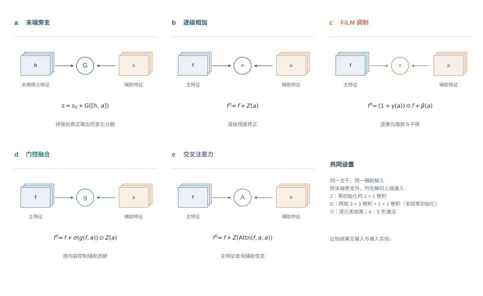
2.6.3 结果
在 OlmoEarth 上，输入同为光谱指数差，只改变融合方式，各训练 3 次（表 13）。
表 13 同样的输入、不同的融合方式（F1 差相对不加辅助数据）
| 配置 | 精确率 | 召回率 | F1 | AP | F1 差（95% 区间） | 训练次数 | 说明 |
|---|---|---|---|---|---|---|---|
| 不加辅助数据（基线） | 0.740 | 0.601 | 0.659 | 0.683 | — | 3 | |
| 只接光谱指数差（6 层：NDVI、NDWI、MNDWI、BSI、短波红外减近红外、可见光亮度 6 个量的后期减前期） | |||||||
| 末端拼接融合 | 0.807 | 0.581 | 0.672 | 0.713 | +0.013（−0.032 至 +0.066） | 3 | |
| FiLM 调制 | 0.792 | 0.630 | 0.695 | 0.735 | +0.035（−0.026 至 +0.122） | 3 | |
| 门控 | 0.725 | 0.667 | 0.683 | 0.722 | +0.023（−0.036 至 +0.099） | 3 | |
| 交叉注意力 | 0.718 | 0.584 | 0.624 | 0.682 | −0.035（−0.085 至 +0.006） | 3 | |
| 多尺度相加 | 0.789 | 0.639 | 0.703 | 0.739 | +0.043（+0.004 至 +0.105） | 3 | |
| 接 18 层：光谱指数差 6 层 + 往年同期 7 层 + 地形 5 层 | |||||||
| 末端拼接融合 | 0.787 | 0.580 | 0.661 | 0.702 | +0.002（−0.050 至 +0.046） | 3 | |
| FiLM 调制 | 0.787 | 0.616 | 0.687 | 0.731 | +0.028（−0.032 至 +0.091） | 3 | |
| 门控 | 0.781 | 0.605 | 0.666 | 0.714 | +0.006（−0.067 至 +0.074） | 3 | |
| 交叉注意力 | 0.735 | 0.599 | 0.652 | 0.693 | −0.008（−0.072 至 +0.025） | 3 | |
| 多尺度相加 | 0.804 | 0.540 | 0.641 | 0.681 | −0.019（−0.109 至 +0.034） | 3 | |
| 雷达作为 OlmoEarth 的原生输入（进编码器） | |||||||
| 末端拼接融合只接指数差 + 原生雷达 | 0.778 | 0.591 | 0.662 | 0.700 | +0.003（−0.053 至 +0.045） | 3 | 与“末端拼接融合只接指数差”只差原生雷达：前侧景、后侧景的 VV、VH 作为 OlmoEarth 的雷达输入进入编码器 |
注：表中各组数据的具体内容——光谱指数差（6 层）：NDVI、NDWI、MNDWI、BSI、短波红外减近红外、可见光亮度 6 个量的后期减前期；往年同期（7 层）：前后两期 NDVI、MNDWI、BSI 相对往年同季的偏离（6 层）和后期可用的往年观测数（1 层）；地形（5 层）：相对高程、坡度、坡向正弦、坡向余弦、局部起伏；多年地表统计（7 层）：水体出现频率、NDVI 的 10%/50%/90% 分位数、BSI 中位数、耕作周期年份比例、无云观测次数；原生雷达（2 景 × 2 极化）：前侧景、后侧景的 VV、VH 作为 OlmoEarth 的雷达输入进入编码器。每一层的定义和处理方法见表 9。
- 多尺度相加最好。F1 为 0.703，比不加指数差高 +0.043，95% 区间 +0.004 至 +0.105，是唯一区间不含 0 的融合方式；FiLM 为 0.695，门控、末端拼接融合较低，交叉注意力低于不加指数差。
- 参数多的融合方式没有优势。有变化的影像对只有 96 个，门控和交叉注意力的参数更多，难以训练好；指数差本身就是很直接的线索，简单的相加已经足够。
- 辅助数据换融合方式也没有用。把“指数差 + 往年同期 + 地形”18 层用同样五种融合方式接入，没有一种比只接指数差好；雷达作为 OlmoEarth 原生输入进入编码器，也与不加雷达持平。
2.7 小结
直接检测的最终方案为 OlmoEarth + LoRA，光谱指数差以多尺度相加接入解码器，F1 为 0.703（精确率 0.789、召回率 0.639），AP 为 0.739；分测点、成像条件和变化类型的结果见表 14。
表 14 直接检测最终方案（OlmoEarth + 光谱指数差（多尺度相加））的详细结果（固定概率 0.5）
| 统计范围 | 精确率 | 召回率 | F1 | 说明 |
|---|---|---|---|---|
| 0.789 | 0.639 | 0.703 | AP 0.739，变化类 IoU 0.549，3 次训练平均 | |
| 测试期像元合并 | 0.726 | 0.618 | 0.667 | |
| 事件（≥ 4 像元的变化区域） | — | 62.8% | — | 共 87 个事件；报出的斑块中 44.0% 不与任何标注变化重叠 |
| 测点：株洲南 | 0.526 | 0.471 | 0.495 | 552 个变化像元 |
| 测点：衡阳北 | 0.756 | 0.703 | 0.729 | 3,921 个变化像元 |
| 测点：韶关南 | 0.722 | 0.401 | 0.515 | 1,183 个变化像元 |
| 无雾影像对 | 0.843 | 0.605 | 0.704 | 4,199 个变化像元 |
| 有雾影像对 | 0.530 | 0.654 | 0.586 | 1,457 个变化像元 |
| 河岸带外 | 0.766 | 0.690 | 0.726 | 4,289 个变化像元 |
| 河岸带内 | 0.568 | 0.391 | 0.461 | 1,367 个变化像元 |
| 类型：新增裸露 | — | 0.671 | — | 4,303 个变化像元 |
| 类型：道路增加 | — | 0.711 | — | 340 个变化像元 |
| 类型：植被减少 | — | 0.627 | — | 458 个变化像元 |
| 类型：水域增加 | — | 0.124 | — | 391 个变化像元 |
| 类型：水域减少 | — | 0.568 | — | 591 个变化像元 |
| 误报所在的后期地物 | — | — | — | 水体 34%；植被 20%；耕地 4%；裸露 27%；建成 3%；无地物标注 13% |
注：河岸带指距水陆分界 3 个像元以内；一个变化区域可同时标有多个类型；“无地物标注”指后期影像没有地物标注的位置。
- 在 10 米 Sentinel-2、数百个影像对的条件下，读 12 个波段预训练的遥感基础模型 OlmoEarth 最好；近两年在高分辨率数据上领先的方法都低于它，经典无监督方法不可用。
- 光谱指数差对多数方法有帮助，融合方式也有影响：OlmoEarth 上多尺度相加优于输出端融合。
- 按直接输入网络的用法，没有一项辅助数据带来可以确认的提高；置换检验显示网络基本没有用到它们。
3 先分类后比较
3.1 文献中的先分类后比较
先分类后比较把变化检测拆成两个问题：先回答“每一期是什么地物”，再回答“两期之间是否发生了需要报告的变化”。它天然给出“从什么变成什么”，结果容易解释；四十年来的研究几乎都围绕第二个问题展开：分类之后，变化到底怎么判。下面按时间顺序介绍（表 15）。
（1）分类后直接比较（PCC，1980 年代起）。最早的做法是对两期影像分别做监督分类，逐像元比较两张分类图，类别不同即判为变化 [6,38]。它的优点是两期可以来自不同传感器、不需要辐射归一化，并直接给出变化类型；缺点有两个。一是误差累积：若每期分类精度为 $p$，两期都分对的概率只有约 $p^2$，任何一期分错都会产生一个虚假变化；Daudt 等在大范围语义变化数据集 HRSCD 上实测，“两张分类图直接相减”的变化 Kappa 只有 3.99 [39]。二是前后同属一类的变化（林地局部清理后仍是植被、工地再次开挖后仍是裸露）无论分类多准都检测不到。
（2）邻域特征 + 机器学习判变化（2005 年前后）。Im 和 Jensen [93] 不再比较类别，而是为每个像元计算两期之间的邻域相关系数、回归斜率和截距等特征，并在多个窗口大小上重复计算，再用决策树判断是否变化。这项工作说明：判断变化的证据不只是“类别变没变”，还有局部范围内两期光谱的一致程度；用多窗口、多类特征交给机器学习模型，是这一类方法的基本做法。
（3）在后验概率空间比较（CVAPS，2011 年）。Chen 等 [57] 提出不比较类别，而是比较分类器输出的两期后验概率向量 $P_1$、$P_2$：变化强度 $\|P_2-P_1\|$ 超过阈值即判为变化，向量方向给出变化类型。概率保留了分类的不确定性（同样判为植被，概率 0.95 和 0.40 含义不同），缓解了 PCC 的误差累积。
（4）多指标 + 随机森林（2015—2019 年）。Hermosilla 等 [94] 在加拿大全国森林变化制图中，为每个变化区计算光谱、时间、形状等数十项指标，用随机森林判断变化类型，这是业务系统中“多特征 + 机器学习”的代表。Zakeri 等 [58] 把 CVAPS 的变化强度与 PCC 的两期类别作为 3 项特征，用随机森林输出变化图，免去了人为设定阈值，是“分类概率 + 机器学习判变化”的直接先例。
（5）深度网络中的“先分割、再判变化”（2019 年）。Daudt 等 [39] 在 HRSCD 上系统比较了四种策略：策略 1 直接比较两张分类图；策略 2 直接输出多类变化；策略 3 分别训练地物分割网络和变化检测网络；策略 4 把二者连在一起，地物分支的特征经跳跃连接送入变化分支，其中 4.1 联合训练、4.2 先训练地物分支、固定后再训练变化分支。四种策略中 4.2 最好（变化 Kappa 25.49），策略 1 最差（3.99）。策略 4.2 正是“分割模型 + 变化检测头”的深度学习形式：分割网络提供两期的地物信息，变化分支读取这些信息和影像，判断是否变化。
（6）多任务语义变化检测（2021 年起）。以 SECOND 数据集和 SeK 指标 [1] 为标准，主流网络变为“两期语义分支 + 一个变化分支”共享编码器、同时训练：ASN [1]、Bi-SRNet [40]（语义推理与一致性约束）、ChangeMask [92]、SCanNet [59]（Transformer 建模“从—到”转移）、MambaSCD [13]、FoBa [60]（前景—背景协同引导），SECOND 上的 SeK 从约 15.5 提高到约 24.6。需要说明，这类网络不是先分类后比较：变化由变化分支直接从两期特征预测，语义分支只负责给已经判为变化的像元标上“从—到”类别；两项任务联合训练，需要两期都有逐像元地物标注和大量训练数据。
（7）分割大模型时代的“先识别、再比较”（2024 年起）。通用分割模型出现后，DynamicEarth [91] 提出免训练的“识别—比较”框架：先用开放词汇分割模型分别识别两期中的目标，再比较两期掩膜判断变化；AnyChange [62] 则直接比较两期 SAM 特征。这类方法不用变化标注，但在 LEVIR-CD 等数据上的 F1 明显低于有监督方法。有监督的做法中，ChangeStar [61] 的 ChangeMixin 也是一个可以接在任意分割网络之后的变化检测头，用单期标注合成的样本训练。
（8）业务系统。美国国家土地覆盖数据库 NLCD [77] 先用多指数变化和长时序找出候选变化，再结合分类结果确认；LCMS [78] 把多种变化检测算法的输出交给随机森林二次判断；国内国土变更调查 [79] 采用“内业提取变化图斑 → 实地举证 → 逐级核查”的流程，并对伪变化有专门的认定规则。它们的共同点是“候选 + 确认”两步。
表 15 先分类后比较及相关方法谱系（按发表时间排列；成绩取自原论文，评价设置各不相同，只作定位）
| 方法 | 出处 | 是否先分类再判变化 | 变化怎么判 | 变化检测头的形式 | 代表成绩 |
|---|---|---|---|---|---|
| 分类后直接比较（PCC） | Singh，1989 [6]；Coppin 等，2004 [38] | 是 | 两期分别分类，类别不同即变化 | 分类器 + 逐像元比较 | HRSCD 变化 Kappa 3.99 [39] |
| 邻域相关特征 + 决策树 | Im 和 Jensen，2005 [93] | 否（直接用两期影像） | 多窗口邻域相关、斜率、截距等特征，决策树判变化 | 机器学习，数十项特征 | — |
| 后验概率变化向量（CVAPS） | Chen 等，2011 [57] | 是 | 两期后验概率向量之差的长度判变化、方向判类型 | 阈值 | — |
| 时序指标 + 随机森林归因 | Hermosilla 等，2015 [94] | 否（时序分割） | 光谱、时间、形状等数十项指标，随机森林判变化类型 | 机器学习，数十项特征 | — |
| CVAPS + PCC + 随机森林 | Zakeri 等，2019 [58] | 是 | 概率变化强度与两期类别作特征，随机森林判变化 | 机器学习，3 项特征 | — |
| 分开训练 / 顺序训练 | Daudt 等，2019 [39] 策略 3、4.2 | 是 | 地物分支训好后固定，再训练读取地物特征的变化分支 | 深度网络（变化分支） | 变化 Kappa 25.49（4.2，四种策略中最好） |
| 多任务语义变化检测 | Yang 等，2022（ASN）[1]；Ding 等，2022（Bi-SRNet）[40]；Zheng 等，2022（ChangeMask）[92] | 否（联合训练） | 两期语义分支与变化分支共享编码器、同时训练，变化由变化分支直接预测 | 深度网络 | SECOND SeK 15.5—23.2 |
| 多任务语义变化检测（近期） | Ding 等，2024（SCanNet）[59]；Chen 等，2024（MambaSCD）[13]；Zhang 等，2025（FoBa）[60] | 否（联合训练） | 在上一行基础上显式建模“从—到”转移、状态空间模型、前景—背景引导 | 深度网络 | SECOND SeK 22.9—24.6 |
| 开放词汇“先识别后比较” | Li 等，2026（DynamicEarth）[91] | 是（免训练） | 用开放词汇分割模型分别识别两期目标，再比较两期掩膜 | 规则比较 | LEVIR-CD 建筑 F1 0.697 |
| 业务系统 | NLCD [77]；LCMS [78]；国土变更调查 [79] | 部分 | 候选变化 + 规则或分类器确认 + 人工核查 | 规则、随机森林集成、人工 | — |
近年的逻辑：分割模型 + 变化检测头。综合以上工作，真正意义上的先分类后比较，近年的形式是：一个训练好、固定的分割模型输出两期的地物概率或特征；一个变化检测头读取这些信息（以及影像本身），判断每个像元是否变化。变化检测头从最简单的“类别不同”（PCC）、“概率差超过阈值”（CVAPS），到读取多项特征的机器学习模型（Im 和 Jensen、Zakeri、Hermosilla），再到读取特征图的深度网络（HRSCD 策略 4.2）。其中，用数十项手工特征训练机器学习模型的做法在遥感变化检测中有先例 [93,94]，但没有一篇论文使用与本研究相同的特征组合。因此本章要回答两个问题：哪一个分割模型最适合本项目，以及哪一种变化检测头最适合本项目；变化检测头先试有出处的做法，再试本研究的设计。
3.2 本研究的流程与依据
3.2.1 三步流程
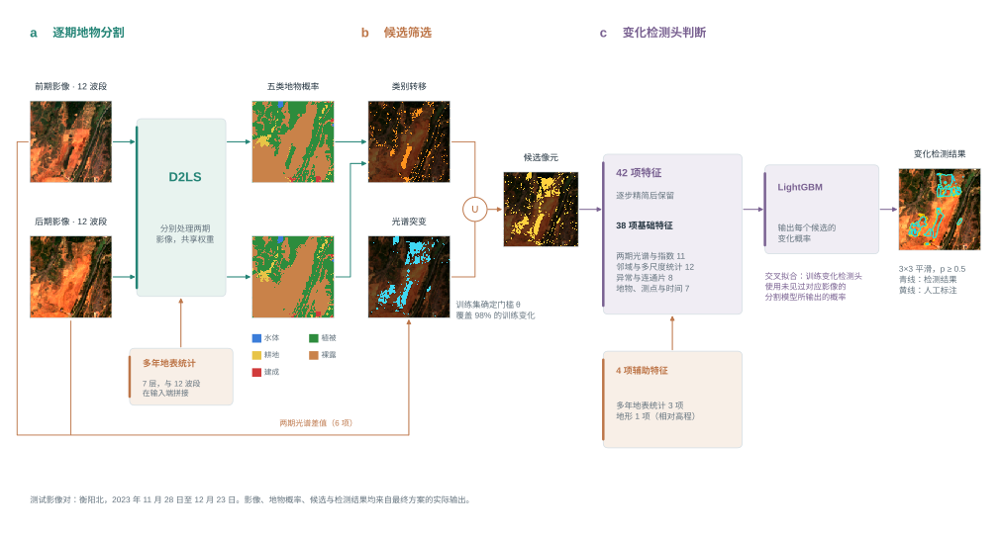
方法分三步（图 9）：
- 逐期地物分割：用分割网络对前后两期影像分别输出每个像元属于五类地物（水体、植被、耕地、裸露、建成）的概率 $P_1$、$P_2$；
- 选出候选像元：满足下面两条之一的像元进入候选，其余像元直接判为没有变化；
- 变化检测头判断：对每个候选像元计算 42 项特征，由变化检测头输出变化概率，概率不低于 0.5 判为变化。
两条候选条件的定义。
- 类别转移：两期概率最大的类别不同，即 $\arg\max_k P_{1,k}\neq\arg\max_k P_{2,k}$。植被和耕地之间的互转不算，因为二者在 10 米分辨率下光谱相近，互转多由季节造成。
- 光谱突变：对 6 项两期差值——NDVI、MNDWI、BSI、可见光亮度（B2、B3、B4 均值）之差，以及 B11、B12 两个短波红外波段的反射率之差——分别在本影像对两期都无云的像元上做稳健标准化：
$$z_j=\frac{d_j-\mathrm{median}(d_j)}{1.4826\cdot\mathrm{MAD}(d_j)},\qquad z_{\max}=\max_j |z_j|$$
$z_j$ 表示这个像元的变化比本影像对大多数像元大多少（1.4826 倍的中位数绝对偏差 MAD 在正态分布下等于标准差）。$z_{\max}\ge\theta$ 即为光谱突变。阈值 $\theta$ 只用训练集确定：取使训练集中 98% 的变化像元能被两条条件之一选中的值。光谱突变这一条专为类别不变的变化而设：它们在分割图上看不出来，但光谱指数发生了明显跳变。
各步的依据。
表 16 先分类后比较各步的做法与文献依据
| 步骤 | 本研究的做法 | 依据 |
|---|---|---|
| 分割与变化分开、分割固定 | 分割网络先训练好并固定，再训练变化检测头 | HRSCD 策略 4.2 在四种策略中最好 [39] |
| 用概率而不只用类别 | 变化检测头读取两期五类概率及其差 | CVAPS [57]、Zakeri 等 [58] |
| 候选 + 确认 | 宽松的规则先保住 98% 的变化，再由变化检测头删去伪变化 | NLCD [77]、LCMS [78]、国土变更调查 [79] |
| 光谱突变条件 | 稳健标准化的指数差，补回类别不变的变化 | CVA [5]；稳健异常检测中的 MAD 标准化 |
| 多项特征 + 树模型判变化 | 光谱、指数、邻域统计、概率和连通片等 42 项特征，LightGBM | Im 和 Jensen [93]、Hermosilla 等 [94]；表格数据上树模型通常优于深度网络 [44] |
| 交叉拟合 | 变化检测头训练时用的分割概率，来自没有见过这些影像的分割模型 | 堆叠泛化（stacking）的标准做法，LCMS 的随机森林集成同理 [78] |
3.2.2 为什么分类之后不能直接比较
在分割最终方案上直接比较两期类别，测试期报出 452,054 个变化像元，其中真变化只有 2,009 个，精确率 0.4%，召回率 0.355（表 17）。每报出 225 个像元，只有 1 个是真的。原因有三个。
表 17 从直接比较两期类别到候选与变化检测头（测试期像元合并；分割为 D2LS（12 个波段 + 多年地表统计））
| 做法 | 判为变化的像元 | 精确率 | 召回率 | F1 |
|---|---|---|---|---|
| 全部参评像元都判为变化 | 10,766,885 | 0.053% | 1.000 | — |
| 两期类别不同即变化 | 452,054 | 0.44% | 0.355 | 0.009 |
| 同上，植被与耕地互转不算 | 346,960 | 0.57% | 0.348 | 0.011 |
| 候选像元全部当作变化（类别转移或光谱突变） | 1,558,587（占 14.5%） | 0.34% | 0.941 | 0.007 |
| 候选像元 + LightGBM 变化检测头（42 项特征，最终方案） | — | 76.3% | 0.656 | 0.705 |
（1）变化太稀少，分割误差被放大。测试期变化像元只占 0.053%。直接比较时，没有变化的像元被错报为变化的比例实测为 4.2%；要达到 0.7 的精确率，这个比例必须低于 0.0135%，两者相差约 309 倍（图 10a）。每期约 80% 的 mIoU，放到两期比较上远远不够。
（2）误报来自两期分割在类别边界上的不一致。同一块没有变化的地面，前期被分成植被、后期被分成裸露，或者反过来，都会产生一个误报。这种不一致集中在两类地方：一是混合像元，一个 10 米像元里同时有植被和裸土，两期光照、湿度稍有不同，概率最大的类别就会翻转；二是类别交界处，例如林地边缘、田埂、工地边缘，分割边界在两期之间前后移动一两个像元。如果误报来自真实变化，它们应当有方向：施工是植被变成裸露，不会同时有同样多的裸露变回植被。把误报按“前期类别 → 后期类别”统计（图 10b），结果却几乎对称：植被→裸露 91,059 个、裸露→植被 94,922 个；植被→耕地 51,848 个、耕地→植被 53,207 个；裸露→建成 30,520 个、建成→裸露 29,876 个。正反两个方向的数量几乎相等，说明这些误报不是地表变化，而是两期分割在边界和混合像元上随机地“这次分成这一类、下次分成那一类”。
（3）大部分真实变化前后类别相同。召回率只有 0.355，是因为 64% 的真实变化在两期分割图上属于同一类。图 11 给出按人工地物标注判定的例子：山坡林地中的小片砍伐，前后两期都被标为植被；工地上再次开挖或堆土，前后两期都是裸露。只比较类别，这部分变化无论分割多准都检测不到。
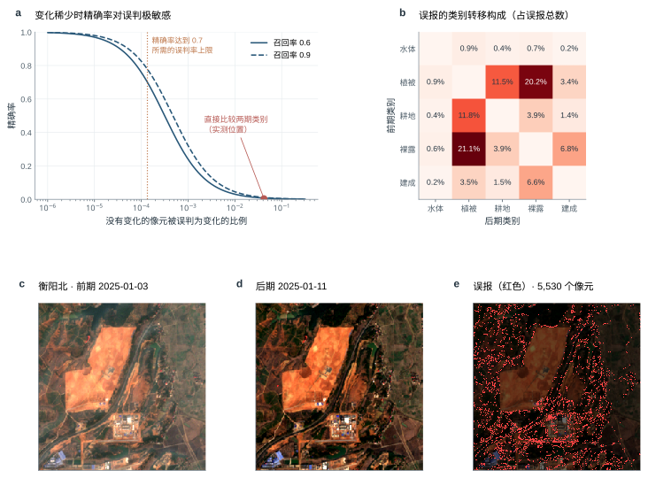
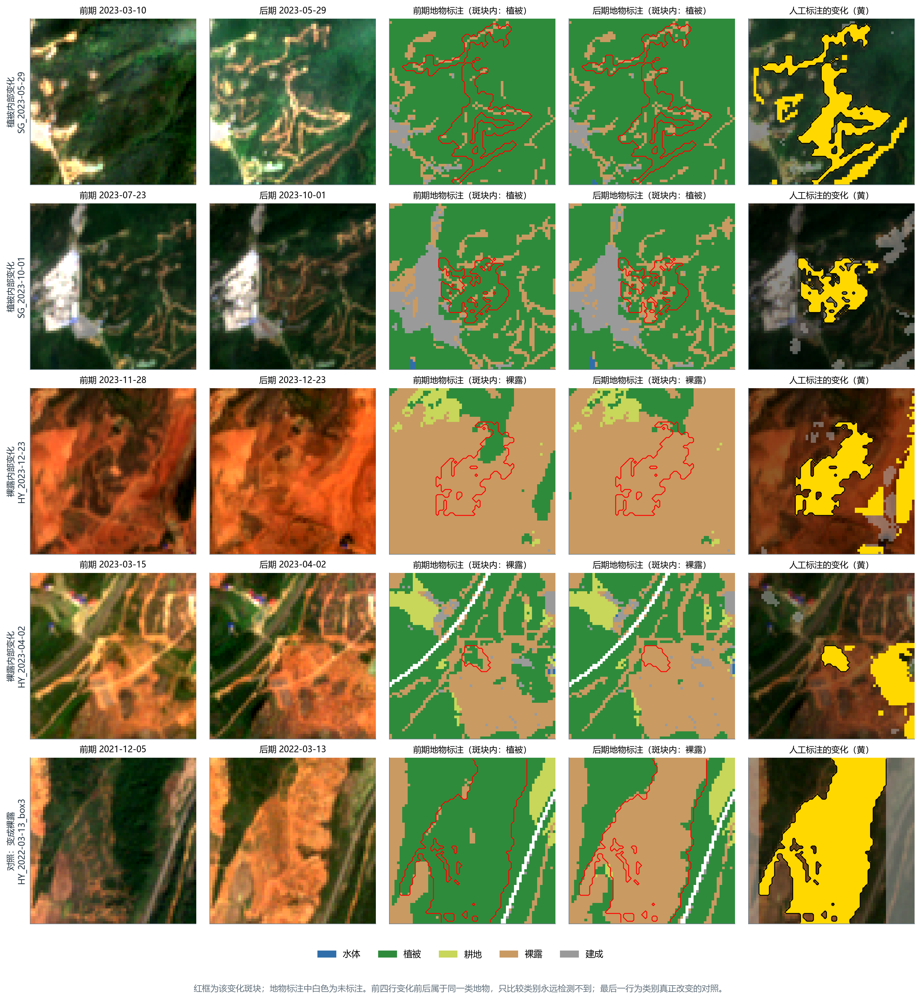
所以分割之后还需要两步：用候选规则保住类别不变的变化，用变化检测头删掉边界不一致造成的误报。
3.3 分割模型
3.3.1 D2LS 分割网络
D2LS（Dynamic Dictionary Learning for Segmentation，动态字典学习分割网络）是 2025 年计算机视觉国际会议（ICCV）上发表的遥感语义分割方法 [41]，在统一条件的比较中是本研究分割精度最高的模型（3.3.2 节）。下面按数据流依次介绍（图 12）。
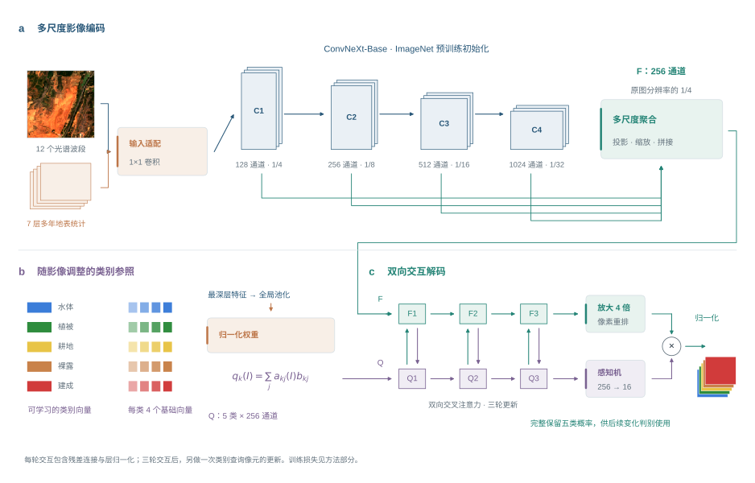
核心思想。一般的分割网络为每一类地物学一个固定的“类别参照”（分类层的权重），对所有影像都一样。但同一类地物的外观会随季节、成像条件和地区改变：夏季和冬季的植被、晴天和薄雾下的裸土，光谱差别很大。D2LS 的思路是让类别参照“随影像而变”：每类准备几个候选参照，根据当前影像的整体情况加权组合出本幅影像的参照，再让参照和像元特征互相更新，使参照更贴合本幅影像中这一类地物的实际样子。这正适合本项目同一测点、跨季节、多成像条件的影像。
（1）输入适配。ConvNeXt-Base 的预训练权重只接受 3 个通道。分割最终方案把 12 个波段和 7 项多年地表统计（观测次数另复制一个通道，共 8 个通道）拼在一起，经一个可学习的 1 × 1 卷积（适配层）压成 3 个通道再送入编码器。适配层的初始权重只把红、绿、蓝三个波段原样传入，其余通道的权重为零，因此训练开始时与只读 RGB 的网络完全相同，其余波段和多年统计的作用在训练中学出来。
（2）多尺度特征提取。编码器为 ConvNeXt-Base [42]，一种借鉴了 Transformer 设计（大卷积核、层归一化、倒置瓶颈）的现代卷积网络，从 ImageNet 预训练权重开始训练。它分四个阶段，特征维数依次为 128、256、512、1024，对应原图 1/4、1/8、1/16、1/32 的尺寸：前面的阶段保留道路、田埂和水边线等细节，后面的阶段汇集更大范围的地物背景。四个阶段的特征统一为 256 维、放大到 1/4 尺寸后合并，得到特征图 $F$（每个位置代表 40 米 × 40 米）。
（3）动态字典：随影像调整的类别参照。每类地物 $k$ 有 4 个可学习的参照向量 $b_{k1},\dots,b_{k4}$（256 维），构成“字典”。网络对最深一层特征做全局平均池化，得到描述整幅影像的向量，经一个小网络算出每类 4 个参照向量的权重（softmax，合计为 1），加权得到这幅影像中该类地物的参照：
$$q_k(I)=\sum_{j=1}^{4}a_{kj}(I)\,b_{kj},\qquad \sum_{j=1}^{4}a_{kj}(I)=1$$
例如，冬季影像中植被的参照会更多地取用“偏黄、近红外较低”的那个候选，夏季则相反。
（4）参照与像元相互更新。五类参照 $Q=[q_1,\dots,q_5]$ 与特征图 $F$ 之间做双向交叉注意力（注意力的计算见 2.2.3 节）：先让每类参照到特征图中“寻找”属于本类的像元，用它们更新自己；再让每个像元到更新后的参照中“查询”类别信息，更新像元特征：
$$Q'=\mathrm{LN}[Q+\mathrm{Attn}(Q,F,F)],\qquad F'=\mathrm{LN}[F+\mathrm{Attn}(F,Q',Q')]$$
LN 为层归一化。每轮用 8 个注意力头，共三轮，之后另有一次参照查询像元的更新。经过这一步，参照从“这类地物一般的样子”变成“这类地物在这幅影像中的样子”，像元特征也吸收了类别信息。
（5）输出五类概率。特征图经两次 2 倍放大恢复到原分辨率，参照经一个两层感知机映射到同一空间，逐像元计算像元特征与五类参照的相似度（点积），经 softmax 得到五类概率 $p_k$。后续使用完整的五类概率，而不只是概率最大的一类。
（6）训练目标。三部分之和：主输出与标注的交叉熵；只用固定参照（不经动态组合与更新）时的输出与标注的交叉熵，权重 0.4，保证字典本身就有区分能力；以及一项对比约束，权重 0.1，让同类参照在不同影像间更接近、不同类参照更分开。
（7）交叉拟合。训练变化检测头时需要训练期每一期影像的地物概率。如果用已经在这些影像上训练过的分割模型去预测它们，概率会“过于准确”，与测试时面对新影像的误差不一致，变化检测头就学不到如何应对分割错误。因此，把训练期和验证期的影像按季度分成两半：用前一半训练的分割模型预测后一半，用后一半训练的模型预测前一半；变化检测头的训练使用这样得到的概率。测试期影像用在全部训练期和验证期影像上训练的分割模型预测。
3.3.2 分割模型比较
条件。所有模型只输入影像本身，分 12 个波段和 RGB 两种；用同样的五类地物标注、同样的切块（256 × 256 像元）和训练步数（4000 步，每批 8 块）；每个模型在 3 个学习率中按验证期的分割精度选一个，再用 3 个随机种子训练（明显落后的模型只训练 1 次，表中注明）。评价指标为五类的 mIoU。参与比较的模型：
- D2LS [41]（ICCV 2025）：3.3.1 节；
- ResNet-34 U-Net [48]：U 形卷积网络强基线；
- Swin V2 UPerNet [47]：Swin V2 Transformer 编码器加金字塔融合解码器；
- SegFormer-B2 [45]：分层 Transformer 编码器加轻量多层感知机解码器；
- UNetFormer [86]：遥感专用的 U 形网络，ResNet-18 编码器加全局—局部 Transformer 解码器，按作者 GeoSeg 代码实现；
- OlmoEarth + LoRA（分割头） [16]：与直接检测相同的 OlmoEarth 编码器和 LoRA，只输入单期影像，接一个逐级放大的分割解码器；
- SAM 3.1 + LoRA [46]：Meta 的通用分割大模型，编码器冻结、加低秩适配。
表 18 只输入影像时各分割模型的分割精度（统一训练条件；测试期 mIoU ± 种子间标准差（训练次数））
| 模型 | 12 个波段 | RGB | 水体 IoU | 植被 IoU | 耕地 IoU | 裸露 IoU | 建成 IoU |
|---|---|---|---|---|---|---|---|
| D2LS | 0.779 ± 0.001（3） | 0.759 ± 0.001（3） | 0.827 | 0.878 | 0.819 | 0.711 | 0.658 |
| ResNet-34 U-Net | 0.762 ± 0.003（3） | 0.745 ± 0.001（2） | 0.813 | 0.870 | 0.823 | 0.684 | 0.621 |
| Swin V2 UPerNet | 0.714 ± 0.001（3） | — | 0.768 | 0.837 | 0.784 | 0.640 | 0.541 |
| SegFormer-B2 | 0.708（1） | — | 0.765 | 0.834 | 0.775 | 0.639 | 0.526 |
| SAM 3.1 + LoRA | — | 0.597（1） | 0.580 | 0.754 | 0.708 | 0.546 | 0.398 |
| UNetFormer（ResNet-18） | 0.701 ± 0.001（3） | — | 0.757 | 0.828 | 0.777 | 0.626 | 0.516 |
| OlmoEarth + LoRA（分割头） | 0.752（1） | — | 0.818 | 0.859 | 0.791 | 0.673 | 0.617 |
注：五类 IoU 取该模型较好的一种输入。统一训练条件：256 × 256 像元切块、每批 8 块、4000 步，学习率在 3 个候选值中按验证期分割精度选定。
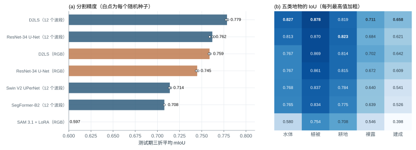
结果（表 18）：
- D2LS 读 12 个波段最好，mIoU 为 0.779，比读 RGB 的 D2LS（0.759）高 0.020，三个种子之间只差 0.001。12 个波段带来的提高集中在水体 IoU 高 0.060、建成 IoU 高 0.015（其余三类相差不到 0.009）：短波红外对水分和建筑材料最敏感，这正是 RGB 缺少的信息。
- 直接检测中最好的 OlmoEarth，在分割中并不占优：只读单期影像时 mIoU 为 0.752（目前 1 个种子），低于 D2LS 和 ResNet-34 U-Net。OlmoEarth 的 token 为 40 米，单期分割需要的地物边界细节靠解码器恢复；而在变化检测中，它的优势主要来自两期在注意力中的直接比较。
- U 形卷积网络是很强的基线，ResNet-34 U-Net 读 12 个波段为 0.762，高于 Swin V2 UPerNet、SegFormer-B2，也高于遥感专用的 UNetFormer（0.701）——UNetFormer 是为 0.05—0.1 米的城市航空影像设计的，ResNet-18 编码器较小，在 10 米多光谱影像上没有优势。
- 在自然图像上预训练的大模型明显落后。SAM 3.1 只读 RGB 时为 0.597。为公平起见，又按 D2LS 完全相同的做法补做了 SAM 3.1：同样的 1 × 1 适配层读入 12 个波段、同样选学习率、训练 3 个种子，再用同样的辅助数据和融合方式（表 19）。SAM 3.1 读 12 个波段为 0.605（3 次训练），比只读 RGB（0.597）高 0.008，但仍比读 12 个波段的 D2LS（0.779）低 0.174。加辅助数据（第一折）：多年地表统计 +0.001；往年同期 −0.003；前一期影像 −0.002（与同一折、同一种子只用 12 波段相比），都在 ±0.003 以内，没有看到 D2LS 那样的提高。
- 各类别的难度一致：所有模型都是植被最好，水体、耕地其次，建成和裸露最差（D2LS 的五类 IoU 依次为 0.827、0.878、0.819、0.711、0.658）。建成和裸露光谱相近，又常与植被混在同一个 10 米像元里，是分割误差的主要来源。
表 19 SAM 3.1 与 D2LS 在同样条件下的分割精度（测试期 mIoU；“完整”= 三个折 × 训练次数的平均 ± 种子间标准差（训练次数）；辅助数据一栏为与同一模型只用 12 个波段在同样的种子和折上的差）
| 设置 | SAM 3.1 + LoRA | D2LS | 说明 |
|---|---|---|---|
| 只读 RGB（完整） | 0.597（1） | 0.759 ± 0.001（3） | 原表 |
| 读 12 个波段（完整） | 0.605 ± 0.002（3） | 0.779 ± 0.001（3） | SAM 3.1 用与 D2LS 相同的 1×1 适配层；学习率按验证期精度在 3 个候选中选定 |
| + 多年地表统计（7 层） | +0.001（1 折） | +0.025（3 次训练） | 输入端拼接 |
| + 往年同期（7 层） | −0.003（1 折） | +0.005（2 次训练） | 输入端拼接 |
| + 前一期影像（12 + 1 层） | −0.002（1 折） | +0.005（3 次训练） | 输入端拼接 |
注：SAM 3.1 的辅助数据实验与 D2LS 完全相同的设置；辅助数据一栏只列已完成的，括号内为完成的折数，只有 1 折的差值只作参考。
结论：分割选 D2LS（12 个波段）。
结果图。分割结果图同样从 D2LS 表现最好的测试期影像中选取：有人工地物标注的像元不少于 40%、至少出现 3 类，按分割最终方案的逐期 mIoU 从高到低，每个测点最多 2 期（图 14）。最后一列为同一网络不加多年地表统计的结果，二者的差别集中在耕地与植被、裸露与植被的交界处（3.4.3 节）。
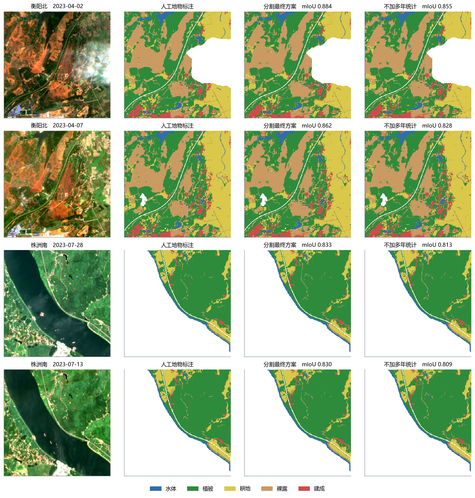
3.4 分割中的辅助数据
3.4.1 逐项加入
以 D2LS（12 个波段）为基线，每次加入一组数据，融合方式为输入端拼接：辅助数据作为额外的输入通道与 12 个波段一起经 1 × 1 适配层进入网络，新增通道的权重从 0 开始学习（训练开始时与基线完全相同）。候选数据为多年地表统计、往年同期、地形、当期无云标记和前一期影像（定义见表 9）。往年同期含后期影像的信息，只在后期影像上提供，预测前期影像时置零。
表 20 在 D2LS（12 个波段）上逐项加入其他数据（输入端拼接；差值为同一折上与基线的 mIoU 之差）
| 加入的数据 | 具体内容 | mIoU | 同折基线 | 差 | 已完成 | 每折 mIoU |
|---|---|---|---|---|---|---|
| 不加辅助数据（基线） | 当期影像的 12 个波段 | 0.779 | — | — | 3 次训练 | 2023 年 4—7 月 0.786；2023 年 11 月—2024 年 3 月 0.796；2024 年 4 月以后 0.754 |
| 多年地表统计（7 层） | 水体出现频率、NDVI 的 10%/50%/90% 分位数、BSI 中位数、耕作周期年份比例、无云观测次数 | 0.803 | 0.779 | +0.025 | 3 次训练 | 2023 年 4—7 月 0.813；2023 年 11 月—2024 年 3 月 0.827；2024 年 4 月以后 0.770 |
| 往年同期（7 层） | 前后两期 NDVI、MNDWI、BSI 相对往年同季的偏离（6 层）和后期可用的往年观测数（1 层）；只给后期影像，预测前期影像时整组置零 | 0.783 | 0.779 | +0.005 | 2 次训练 | 2023 年 4—7 月 0.789；2023 年 11 月—2024 年 3 月 0.801；2024 年 4 月以后 0.759 |
| 地形（5 层） | 相对高程、坡度、坡向正弦、坡向余弦、局部起伏 | 0.783 | 0.779 | +0.005 | 3 次训练 | 2023 年 4—7 月 0.789；2023 年 11 月—2024 年 3 月 0.801；2024 年 4 月以后 0.759 |
| 当期无云标记（1 层） | 当期影像逐像元是否无云 | 0.778 | 0.779 | −0.001 | 2 次训练 | 2023 年 4—7 月 0.786；2023 年 11 月—2024 年 3 月 0.795；2024 年 4 月以后 0.753 |
| 前一期影像（12 + 1 层） | 180 天内最近一期较清楚影像的 12 个波段和该期无云标记 | 0.783 | 0.779 | +0.005 | 3 次训练 | 2023 年 4—7 月 0.791；2023 年 11 月—2024 年 3 月 0.803；2024 年 4 月以后 0.756 |
| 前四项一起加入（20 层） | 多年地表统计 7 层 + 往年同期 7 层 + 地形 5 层 + 当期无云标记 1 层 | 0.806 | 0.779 | +0.027 | 3 次训练 | 2023 年 4—7 月 0.814；2023 年 11 月—2024 年 3 月 0.831；2024 年 4 月以后 0.773 |
注：差值都与同一折上的基线比较。输入中多年地表统计的观测次数、往年同期的往年观测数各再复制一个通道（共 8 个通道），每一层的定义见表 9。
- 多年地表统计带来明显提高：加入后 mIoU 为 0.803，同一批测试期上的基线为 0.779，提高 0.025（已完成 3 次训练训练，每一折、每一次训练都高于基线所有种子中最好的一次）。
- 其余各项基本没有作用：往年同期 +0.005（2 次训练）；地形 +0.005（3 次训练）；前一期影像 +0.005（3 次训练）。三项都只比基线高 0.005 以内，与不同随机种子之间的差别相当，可以判断没有明显作用；这类不会改变结论的配置训练 2—3 次。当期无云标记加入后 mIoU 为 0.778，与基线（0.779）相同。
- 组合：四项一起加入（多年地表统计、往年同期、地形和无云标记）的 mIoU 为 0.806，比基线高 0.027（3 次训练），与只加多年地表统计（高 0.025）接近：提高主要来自多年地表统计，其余三项加进来作用很小。
3.4.2 融合方式
输入为多年地表统计，只改变融合方式：输入端拼接（对照），以及 FiLM 调制 [24]、门控 [25] 和双分支相加 [87] 三种特征层融合——12 个波段照常进入编码器，多年地表统计另经两层卷积编码到 1/4 分辨率，在 D2LS 四个尺度合并后的特征图上接入，接入层从 0 开始学习。
表 21 多年地表统计的四种融合方式（D2LS 12 个波段；所有差值都在同一批测试折上计算）
| 融合方式 | mIoU | 比不加辅助数据 | 比输入端拼接 | 已完成 |
|---|---|---|---|---|
| 输入端拼接（对照） | 0.803 | +0.025 | — | 3 次训练 |
| FiLM 调制 | 0.799 | +0.020 | −0.005 | 1 次训练 |
| 门控 | 0.799 | +0.021 | −0.004 | 1 次训练 |
| 双分支相加 | 0.797 | +0.019 | −0.006 | 1 次训练 |
注：FiLM、门控、双分支都把多年地表统计经两层卷积编码到 1/4 分辨率，在 D2LS 四个尺度合并后的特征图上接入，接入层从 0 开始学习（训练开始时等于不加辅助数据）。未完成三个折的融合方式只和输入端拼接在已完成的折上比较。多年地表统计的具体内容——多年地表统计（7 层）：水体出现频率、NDVI 的 10%/50%/90% 分位数、BSI 中位数、耕作周期年份比例、无云观测次数。每一层的定义和处理方法见表 9。
在已完成的折上，与输入端拼接相比：FiLM 调制 −0.005（1 次训练）；门控 −0.004（1 次训练）；双分支相加 −0.006（1 次训练）。三种融合方式都没有超过最简单的输入端拼接。
分割的最终方案：D2LS 读 12 个波段，多年地表统计在输入端与 12 个波段拼接（mIoU 0.803，3 次训练）。逐项加入时只有多年地表统计明显提高分割精度，换融合方式时三种更复杂的融合方式都没有超过输入端拼接，按“分割各步比 mIoU”的规则取这一方案；四项一起加入的 mIoU 为 0.806（比基线高 0.027），只加多年地表统计比基线高 0.025，两者相差不到 0.005，按“持平取简单”取只加多年地表统计。
3.4.3 多年地表统计为什么有用
多年地表统计用该影像对前期（含）以前的全部无云观测，逐像元统计“这里多年来通常是什么样”：常不常有水、一年里最绿和最不绿时各是多少、通常有多裸、是不是每年都有耕作的起落（表 22、图 15）。为弄清它为什么有用，在三个种子、三个折的测试期上逐像元比较了加与不加多年统计的分割结果：
表 22 多年地表统计的 7 项：怎么算、为什么要加（逐像元计算，只用该影像对前期（含）以前的无云观测）
| 项目 | 怎么算 | 为什么要加（回答什么问题） | 最终方案中的使用 |
|---|---|---|---|
| ① 水体出现频率 | 无云观测中被判为水面（MNDWI > 0.1 且 NDVI < 0.2）的次数所占比例，0—1 | 这里常年有水、季节性有水，还是从来没有水。河滩、水库消落带的水位涨落会让当期影像在水面与裸露、植被之间来回变；知道这里本来就时有时无水，就不容易把水位涨落当成新出现的水域或裸地 | 分割输入；变化检测头精简后未保留 |
| ② NDVI 10% 分位数 | 历次 NDVI 从低到高排序后第 10% 处的值，接近这里一年中最不绿时的水平 | 这里最不绿的时候绿不绿：林地最低时仍较高，耕地、裸露、建成最低时接近裸土。也可以看一次 NDVI 下降是否低于这里往年的最低水平——低于往年最低的下降更像真实的清表、砍伐 | 分割输入；变化检测头最终方案保留 |
| ③ NDVI 中位数 | 历次 NDVI 的中位数 | 这里通常有多绿，是“这里通常是什么地物”最直接的指标；当期影像有雾、有阴影或正处在季节转换时，帮助分割判断类别 | 分割输入；变化检测头精简后未保留 |
| ④ NDVI 90% 分位数 | 历次 NDVI 排序后第 90% 处的值，接近生长季最绿时的水平 | 这里最绿的时候有多绿：建成区和长期裸露地在生长季也不绿，耕地、林地在生长季很绿。与 ② 合起来就是季节变化幅度，幅度大说明这里本来就有绿—黄—裸的季节起落，这种起落不算需要报告的变化 | 分割输入；变化检测头最终方案保留 |
| ⑤ BSI 中位数 | 历次裸土指数 BSI 的中位数 | 这里通常有多裸。裸露地和建成区的 NDVI 都低，BSI 帮助把二者分开；本来就是裸地的地方，再次出现裸土不一定是新的清表 | 分割输入；变化检测头精简后未保留 |
| ⑥ 耕作周期年份比例 | 在一年中至少有 4 次无云观测的年份里，NDVI 最高 ≥ 0.6 且最低 ≤ 0.3（“一绿一裸”）的年份所占比例 | 这里是不是耕地。耕地每年“种了变绿、收了变裸”，按标注规则耕种收割不算变化；施工只起落一次，多年看不成周期。比例高的地方，NDVI 大起大落多半是耕作而不是施工 | 分割输入；变化检测头精简后未保留 |
| ⑦ 无云观测次数 | 前期以前的无云观测次数 / 50，截到 1 | 上面 6 项可不可信：观测少时统计不可靠。观测不足 3 次的像元 ①—⑥ 记 0，这一项让模型分清“没有数据”和“统计值本来就小” | 分割输入（另复制一个通道）；变化检测头最终方案保留 |
注：7 项都只用前期（含）以前的观测，不含两期之间发生的变化，所以对同一影像对的前后两期是同一份；无云按场景分类判断。分割最终方案在输入端使用全部 7 项（无云观测次数另复制一个通道，共 8 个通道）；变化检测头最终方案的 42 项特征中保留其中 3 项（3.6 节）。
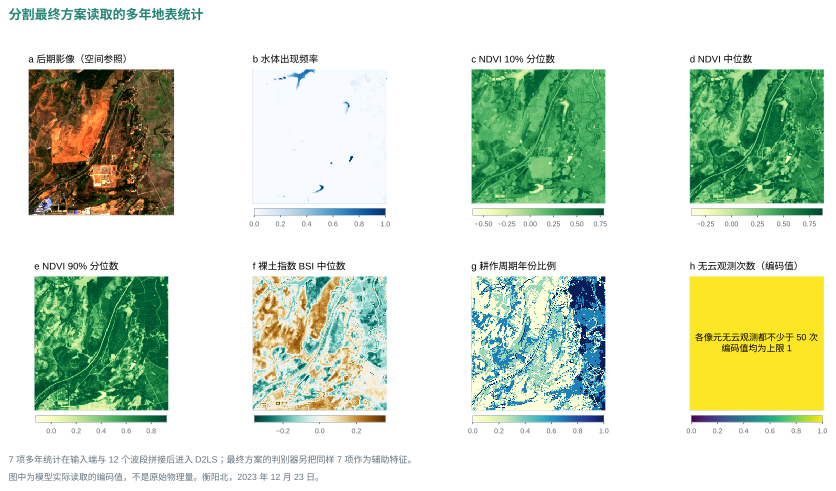
表 23 加入多年地表统计后，减少最多的分割混淆（三个种子、测试期像元合计）
| 真实类别 → 错分为 | 只读 12 个波段 | 加多年统计 | 减少 | 占全部减少 |
|---|---|---|---|---|
| 耕地 → 植被 | 272,134 | 216,874 | 55,260 | 24% |
| 植被 → 耕地 | 409,661 | 363,591 | 46,070 | 20% |
| 裸露 → 植被 | 366,101 | 324,464 | 41,637 | 18% |
| 植被 → 建成 | 118,896 | 96,402 | 22,494 | 10% |
| 裸露 → 建成 | 125,968 | 105,546 | 20,422 | 9% |
| 裸露 → 耕地 | 116,140 | 97,994 | 18,146 | 8% |
- 主要解决耕地与植被的混淆。减少的错分中，耕地与植被之间的互相错分占 44%，五类中耕地的 IoU 提高最多（+0.028）。单看一期影像，生长季的耕地和林草都是绿的、收获后的耕地和裸土都是黄的，很难分开；而“是否每年都有一绿一裸的起落”“一年中最绿和最不绿相差多少”正好区分耕地（起落大）和林草（常绿）。
- NDVI 分位数贡献最大。逐项去掉一项再训练，去掉 NDVI 的 10%、50%、90% 分位数时 mIoU 各下降 0.002—0.003，去掉水体频率、BSI 中位数、观测次数几乎不变——各项之间有重叠，起主要作用的是描述植被季节幅度的 NDVI 分位数。
- 在各种条件下都稳定。按季节分组，春、夏、秋、冬的 mIoU 平均提高 0.026—0.029，93%—100% 的期都有提高；有雾的期提高 0.032，略多于无雾的 0.026——单期影像越不清楚，多年背景越有用。三个测点中株洲南提高最多（+0.044）。
需要注意，多年统计描述的是“过去的常态”，它让分割更准，但也让前后两期更容易被分成同一类（3.6.2 节）：分割精度提高了，对判断变化却没有帮助。
3.5 变化检测头
3.5.1 文献中的变化检测头
按 3.1 节的梳理，分类之后判断变化的方法可分为三代：
- 传统方法：类别直接比较（PCC [6]）；后验概率差的长度加阈值（CVAPS [57]），阈值用 Otsu 法 [96] 等无监督方法确定。不需要变化标注，只用到两期的分类结果。
- 机器学习方法：为每个像元计算若干特征，用有监督的分类器判断变化。Zakeri 等 [58] 只用 3 项特征（CVAPS 变化强度和两期类别）；Im 和 Jensen [93] 用多窗口的邻域相关特征；Hermosilla 等 [94] 用光谱、时间、形状等数十项指标。可见“几十项特征 + 树模型”在遥感变化检测中是有先例的做法，只是具体特征各不相同。
- 深度网络：变化分支直接读取两期影像和地物分支的特征图（HRSCD 策略 4.2 [39]），由网络自己学习特征。
本研究在同一份分割概率上，三代方法都做了比较：传统方法按原文公式；机器学习方法先按 Zakeri 等的原文设置（3 项特征、随机森林），再用本研究设计的 42 项特征分别训练多种分类器；深度网络仿 HRSCD 策略 4.2。
3.5.2 本研究的 42 项特征
42 项特征是本研究设计的，思路来自上述文献：概率与类别特征来自 CVAPS 和 Zakeri 等，稳健标准化的光谱变化来自 CVA，多窗口邻域统计来自 Im 和 Jensen，连通片特征来自面向对象变化检测中的形状指标 [94]。最初设计了更多候选特征，按“每次去掉对 F1 影响最小的一组”逐步精简，最终保留 42 项，分为两期光谱、指数及差值、稳健异常、邻域统计、地物概率与转移、候选连通片、测点与时间、多年地表统计和地形 10 组，逐项定义见表 24。
表 24 变化检测头用的 42 项特征（* 为辅助数据）
| 特征组 | 项数 | 特征 | 作用 |
|---|---|---|---|
| 两期光谱 | 4 | 后期 B4、前期 B8、前期 B12、后期 B12 | 保留可见光、近红外和短波红外的原始信息 |
| 指数及差值 | 7 | 后期 NDVI、NDVI 差、后期 MNDWI、MNDWI 差、后期 BSI、BSI 差、亮度差 | 描述植被、水分、裸土和亮度的状态与变化方向 |
| 稳健异常 | 5 | NDVI 异常、亮度异常、B11 异常、B12 异常、zmax | 判断变化相对于本影像对大多数像元是否异常 |
| 初级邻域统计 | 3 | zmax 3×3 均值、NDVI 异常 3×3 均值、NDVI 差 3×3 标准差 | 区分孤立噪点与成片变化 |
| 多尺度邻域 | 9 | NDVI 异常 5×5 均值、NDVI 异常 11×11 均值、BSI 异常 5×5 均值、BSI 异常 11×11 均值、亮度异常 5×5 均值、zmax 21×21 均值、前期 NDVI 11×11 均值、后期亮度 11×11 均值、后期亮度 5×5 标准差 | 结合近处细节与较大范围背景 |
| 地物概率与转移 | 2 | 后期水体概率、转移标记 7×7 均值 | 判断地物是否改变、往什么方向改变 |
| 候选连通片 | 3 | 片面积、片内 zmax 均值、片内转移比例 | 利用变化斑块的整体属性 |
| 测点与时间 | 5 | 衡阳北编码、韶关南编码、日序正弦、日序余弦、间隔天数 | 提供季节与观测间隔背景 |
| 多年地表统计 * | 3 | NDVI 10% 分位数、NDVI 90% 分位数、无云观测次数 | 提供“这里多年来通常是什么”的背景 |
| 地形 * | 1 | 相对高程 | 提示陡坡阴影和地形位置 |
注：稳健异常 = 两期差值在本影像对两期都无云的像元上减中位数、除以 1.4826 倍中位数绝对偏差（截到 ±8）；$z_{\max}$ 为 6 项稳健异常绝对值的最大值（见 3.2.1 节）。邻域统计在以该像元为中心的方窗内计算；连通片为候选像元的 8 邻接连通区域。多年地表统计、地形各项的定义见表 22和表 9。
变化检测头的分类器为 LightGBM [49]，一种梯度提升树 [43]：由许多棵小决策树依次组成，每一棵新树学习前面所有树还没有分对的部分，再按一个较小的比例加到已有结果上，$F_m(x)=F_{m-1}(x)+\eta\,h_m(x)$。LightGBM 先把每个特征的取值分成最多 255 段（直方图），在段的分界上找最佳分裂点，并且每次只分裂收益最大的叶节点（按叶生长），训练快、能直接处理缺失值。设置：最多 500 棵树，学习率 0.05，每棵树最多 15 个叶节点、每个叶节点至少 300 个样本，L2 正则系数 5，每棵树随机使用 80% 的样本和 80% 的特征，按两类样本数平衡权重，留出 10% 的训练影像对提前停止。候选以外的像元变化概率记为 0；候选内的概率与 3 × 3 邻域平均各占一半，去除孤立噪点。
3.5.3 比较结果
表 25 先分类后比较：各类变化检测头在同一套分割概率上的比较（固定概率 0.5；括号内为训练次数）
| 类别 | 变化检测头 | 出处 | 输入 | 精确率 | 召回率 | F1 | 说明 |
|---|---|---|---|---|---|---|---|
| 传统方法 | 分类后直接比较（PCC） | Singh，1989 [6] | 两期类别 | 0.013 | 0.366 | 0.025 | 不训练；分割 3 个种子平均 |
| 传统方法 | 后验概率变化向量（CVAPS）+ Otsu 阈值 | Chen 等，2011 [57]；Otsu，1979 [96] | 两期五类概率 | 0.010 | 0.466 | 0.019 | 不训练；分割 3 个种子平均 |
| 传统方法 | CVAPS + 训练与验证集选阈值 | Chen 等，2011 [57] | 两期五类概率 | 0.549 | 0.044 | 0.080 | 不训练；分割 3 个种子平均 |
| 机器学习 | 随机森林（CVAPS 变化强度 + 两期类别） | Zakeri 等，2019 [58] | 3 项特征 | 0.027 | 0.164 | 0.043（3 次） | 按原文 3 项特征与 500 棵树 |
| 机器学习 | LightGBM（最终方案） | Ke 等，2017 [49] | 候选像元的 42 项特征 | 0.802 | 0.680 | 0.736（3 次） | |
| 机器学习 | 直方图梯度提升树 | Friedman，2001 [43] | 候选像元的 42 项特征 | 0.790 | 0.689 | 0.735（3 次） | |
| 机器学习 | XGBoost | Chen 和 Guestrin，2016 [50] | 候选像元的 42 项特征 | 0.768 | 0.703 | 0.732（3 次） | |
| 机器学习 | 随机森林 | Breiman，2001 [52] | 候选像元的 42 项特征 | 0.765 | 0.644 | 0.699（3 次） | |
| 机器学习 | CatBoost | Prokhorenkova 等，2018 [51] | 候选像元的 42 项特征 | 0.531 | 0.770 | 0.621（3 次） | 另一次特征导出 |
| 机器学习 | 两层神经网络 | — | 候选像元的 42 项特征 | 0.854 | 0.439 | 0.571（3 次） | 另一次特征导出 |
| 机器学习 | 逻辑回归 | — | 候选像元的 42 项特征 | 0.294 | 0.767 | 0.405（3 次） | 另一次特征导出 |
| 机器学习 | TabM（表格深度网络） | Gorishniy 等，2025 [98] | 候选像元的 42 项特征 | 0.931 | 0.428 | 0.587（1 次） | 另一次特征导出 |
| 深度网络 | 解码器式（U-Net，ResNet-34） | 仿 Daudt 等，2019 [39] 策略 4.2 | 两期 12 波段 + 指数差 + 两期五类概率 | 0.792 | 0.494 | 0.585（3 次） | 分割冻结，只训练变化分支；分割 3 个种子 |
| 深度网络 | 对照：同一网络不接分割概率 | — | 两期 12 波段 + 指数差 | 0.691 | 0.547 | 0.594（3 次） | 即直接检测的 U-Net 早融合 + 指数差 |
注：各行读同一份分割最终方案（D2LS 读 12 个波段 + 多年地表统计）的五类概率：训练和验证影像对用交叉拟合预测，测试影像对用全量模型预测；机器学习方法的候选像元和 3 × 3 平滑相同；说明一栏未另注的，分割为第 1 个种子。
结果（表 25）：
- 只用分类结果的方法都不可用。PCC、CVAPS 不论用无监督阈值还是训练与验证集阈值，F1 都低于 0.1；按 Zakeri 等原文的 3 项特征训练随机森林，也只有约 0.04。原因与 3.2.2 节一致：误报来自两期分割在边界上的不一致，而大部分真实变化前后类别相同，只看类别和概率差既删不掉前者、也找不回后者。
- 加入光谱、邻域等特征后，机器学习变化检测头大幅提高。读 42 项特征时 LightGBM 的 F1 最高（0.736），作为最终方案的变化检测头；直方图梯度提升树、XGBoost 次之，随机森林 0.699；逻辑回归、两层神经网络、表格深度网络都明显落后，与“中等规模表格数据上树模型通常更好”的结论一致 [44]。
- 解码器式变化检测头没有超过机器学习变化检测头。结果（表 25）：解码器式变化检测头 F1 为 0.585（AP 0.575），不接分割概率的对照为 0.594，分割概率带来 −0.009（95% 区间 −0.079 至 +0.083）；与同样用三个分割种子的 LightGBM 变化检测头（0.730）相比差 −0.145。分割概率是否真被用上。测试时把分割概率的 10 个通道置零，F1 从 0.585 降到 0.518；把概率图整体平移 128 个像元（分布不变、位置对不上），降到 0.391（3 个种子平均，只做诊断）。可见解码器式头确实依赖与影像对齐的分割概率，但它用分割概率替代了本可从影像中学到的信息，整体没有超过不接分割概率的对照，更明显低于梯度提升树变化检测头。
3.5.4 变化检测头做了什么
按两期分割类别是否相同，把测试期的真实变化分成两组，分别统计判断后的检出比例（图 16）：
- 删掉假转移。分割判为两期类别不同、实际没有变化的像元有 450,045 个，判断后只剩 416 个，删掉了 99.91%；同一组中的真实变化保留了 78%。
- 补回同类变化。分割判为两期类别相同的真实变化有 3,647 个，直接比较类别时一个也检测不到；变化检测头依靠光谱突变和邻域特征找回了 62%。最终检出的真实变化中，59% 来自分割判为同类的像元。
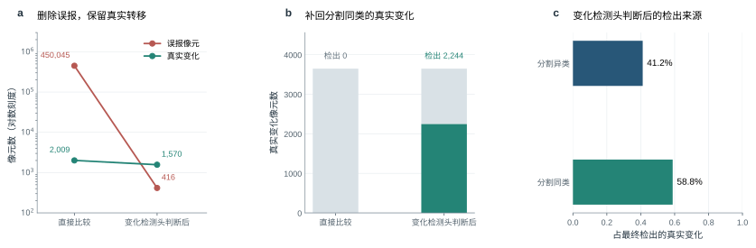
3.6 最终方案的结果与两条路线的比较
3.6.1 最终方案
先分类后比较的最终方案为：D2LS（12 个波段 + 多年地表统计）分割 + 候选像元 + LightGBM 变化检测头（42 项特征）。F1 为 0.736（精确率 0.802、召回率 0.680），AP 为 0.758。以上是分割第 1 个随机种子的结果；分割换用另外两个随机种子（变化检测头不变）时 F1 为 0.719 和 0.734，三个分割种子平均 0.730，最高与最低相差 0.017，这是分割训练的随机性带来的波动。表 26 给出各测点和不同成像条件下的结果。结果图从最终方案表现最好的测试影像对中选取（选例规则同 2.4 节）。
表 26 先分类后比较（D2LS（12 个波段 + 多年地表统计）分割 + 候选像元 + LightGBM 变化检测头（42 项特征））的详细结果（固定概率 0.5）
| 统计范围 | 精确率 | 召回率 | F1 | 说明 |
|---|---|---|---|---|
| 测试期 2023 年 4—7 月 | 0.935 | 0.765 | 0.842 | AP 0.870 |
| 测试期 2023 年 11 月—2024 年 3 月 | 0.855 | 0.751 | 0.800 | AP 0.848 |
| 测试期 2024 年 4 月以后 | 0.616 | 0.525 | 0.566 | AP 0.557 |
| 0.802 | 0.680 | 0.736 | AP 0.758，变化类 IoU 0.596，3 次训练平均 | |
| 测试期像元合并 | 0.763 | 0.656 | 0.705 | |
| 事件（≥ 4 像元的变化区域） | — | 60.9% | — | 共 87 个事件；报出的斑块中 45.1% 不与任何标注变化重叠 |
| 测点：株洲南 | 0.802 | 0.357 | 0.494 | 552 个变化像元 |
| 测点：衡阳北 | 0.766 | 0.708 | 0.736 | 3,921 个变化像元 |
| 测点：韶关南 | 0.746 | 0.622 | 0.677 | 1,183 个变化像元 |
| 无雾影像对 | 0.791 | 0.636 | 0.705 | 4,199 个变化像元 |
| 有雾影像对 | 0.702 | 0.714 | 0.707 | 1,457 个变化像元 |
| 河岸带外 | 0.772 | 0.738 | 0.755 | 4,289 个变化像元 |
| 河岸带内 | 0.720 | 0.398 | 0.509 | 1,367 个变化像元 |
| 类型：新增裸露 | — | 0.734 | — | 4,303 个变化像元 |
| 类型：道路增加 | — | 0.633 | — | 340 个变化像元 |
| 类型：植被减少 | — | 0.435 | — | 458 个变化像元 |
| 类型：水域增加 | — | 0.465 | — | 391 个变化像元 |
| 类型：水域减少 | — | 0.262 | — | 591 个变化像元 |
| 误报所在的后期地物 | — | — | — | 水体 8%；植被 41%；耕地 3%；裸露 35%；建成 8%；无地物标注 5% |
注：河岸带指距水陆分界 3 个像元以内；一个变化区域可同时标有多个类型；“无地物标注”指后期影像没有地物标注的位置。
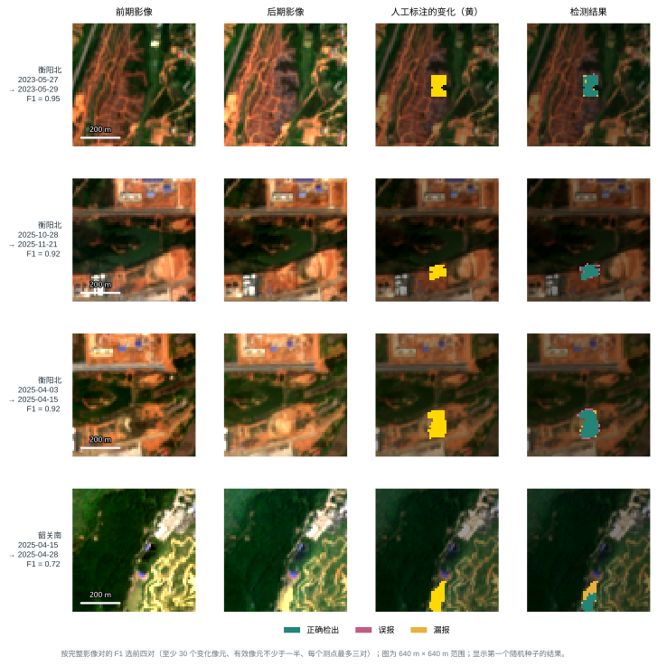
- 测点：衡阳北 0.736；韶关南 0.677；株洲南 0.494。株洲南测试期变化像元最少、多为小片，F1 最低。
- 成像条件：有雾影像对的 F1 为 0.707，无雾的为 0.705；河岸带内为 0.509，是最困难的区域。
- 变化区域大小：超过 100 个像元的变化区域召回率为 0.777，5—20 个像元的为 0.194，1—4 个像元的只有 0.114。
3.6.2 分割精度与检测成绩
把统一条件下训练的各个分割模型逐个接上同一套候选规则和变化检测头，检测成绩并不随分割精度同步提高（表 27、图 18）。七个分割方案的 mIoU 从 0.597 到 0.803，相差 0.206；接同一个变化检测头后，检测 F1 从 0.671 到 0.719，相差 0.048，两者的相关系数为 −0.32（图 18）。分割最好的是 D2LS（12 个波段 + 多年地表统计）（mIoU 0.803，检测 F1 0.706），检测最好的却是 SAM 3.1 + LoRA（RGB）（mIoU 0.597，检测 F1 0.719）。分割更准，并没有带来检测更好。原因在于分工：判断真伪的主要证据是光谱变化和邻域信息（大部分真实变化前后类别相同，本来就要靠光谱），分割提供的是“前后各是什么地物”的背景；分割在整幅影像上更准，并不意味着在变化附近的少数像元上更准。这张表的变化检测头读的是未精简的基础特征、不加辅助特征，因此数值低于最终方案；在这一设置下，只读 12 个波段的 D2LS 分割（0.715）检测成绩反而略高于加多年地表统计的分割（0.706）。在测试期真实发生类别转移的像元上，只读影像的分割有 78% 把前后两期分成了不同类别（候选规则能抓到它们的前提），加入多年地表统计后降到 61%；两期都分对的比例从 64% 降到 50%。在没有变化的像元上则相反：两期被分成不同类别的比例从 5.4% 降到 3.8%，后期分对的比例从 89.0% 升到 90.0%。原因是多年地表统计对前后两期是同一份，它告诉网络“这里多年来通常是什么”，两期的分割都被拉向同一个答案：没变的地方更稳，真正变了的地方也被一起抹平。分割精度由大量没变的像元决定，所以 mIoU 升高；检测靠的恰恰是少数变了的像元，所以检测没有同步提高。由此得到一个明确的改进方向：训练时让网络有时看不到多年地表统计，迫使它在变化处更多地依据当期影像。
表 27 分割精度与检测成绩（统一训练条件的分割模型，各取第 1 个分割种子；接同一套候选规则与直方图梯度提升树变化检测头（未精简的基础特征），3 个变化检测头种子平均）
| 分割模型 | 分割 mIoU | 检测 F1 | 检测 AP |
|---|---|---|---|
| D2LS（12 个波段 + 多年地表统计） | 0.803 | 0.706 | 0.753 |
| D2LS（12 个波段） | 0.779 | 0.715 | 0.775 |
| D2LS（RGB） | 0.759 | 0.699 | 0.742 |
| ResNet-34 U-Net（12 个波段） | 0.763 | 0.671 | 0.731 |
| Swin V2 UPerNet（12 个波段） | 0.715 | 0.684 | 0.737 |
| SAM 3.1 + LoRA（RGB） | 0.597 | 0.719 | 0.751 |
| SegFormer-B2（12 个波段） | 0.708 | 0.709 | 0.750 |
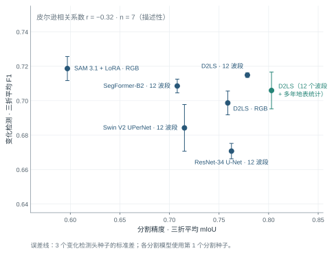
3.6.3 两条路线的比较
表 28 两条路线最终方案及其融合的比较（固定概率 0.5）
| 指标 | 直接检测：OlmoEarth + 光谱指数差（多尺度相加） | 先分类后比较（最终方案）：D2LS（12 个波段 + 多年地表统计）分割 + 候选像元 + LightGBM 变化检测头（42 项特征） | 两者等权融合（补充对照） | 按验证集选权重融合（直接检测 0.35、先分类后比较 0.65）（补充对照） |
|---|---|---|---|---|
| F1 | 0.703 | 0.736 | 0.734 | 0.746 |
| 精确率 | 0.789 | 0.802 | 0.865 | 0.865 |
| 召回率 | 0.639 | 0.680 | 0.638 | 0.656 |
| AP | 0.739 | 0.758 | 0.807 | 0.807 |
| 变化类 IoU | 0.549 | 0.596 | 0.585 | 0.603 |
| 测试期像元合并 F1 | 0.667 | 0.705 | 0.709 | 0.720 |
| 训练次数 | 3 | 3 | 各 3 次，按次序配对 | 各 3 次，按次序配对 |
| F1：2023 年 4—7 月 | 0.812 | 0.842 | 0.820 | 0.842 |
| F1：2023 年 11 月—2024 年 3 月 | 0.692 | 0.800 | 0.727 | 0.767 |
| F1：2024 年 4 月以后 | 0.604 | 0.566 | 0.655 | 0.628 |
| F1：有雾影像对 | 0.586 | 0.707 | 0.664 | 0.722 |
| F1：无雾影像对 | 0.704 | 0.705 | 0.728 | 0.719 |
| F1：河岸带内 | 0.461 | 0.509 | 0.477 | 0.496 |
| F1：河岸带外 | 0.726 | 0.755 | 0.773 | 0.774 |
| 事件检出率 | 62.8% | 60.9% | 62.5% | 61.3% |
| 报出斑块中与标注不重叠的比例 | 44.0% | 45.1% | 29.4% | 30.4% |
注：融合把两条路线输出的变化概率逐像元加权平均，再按 0.5 判定；等权融合两者各占 0.5，按验证集选权重的融合在三个折的验证集合并后选验证 F1 最高的权重（见本章“两条路线融合”）。两条路线的第 1、2、3 次训练依次配对。按变化类型的召回率和报警斑块数只对两条路线单独统计，融合一栏记“—”。
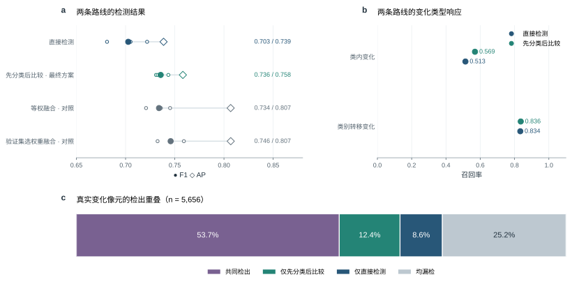
先分类后比较的 F1 为 0.736，AP 为 0.758；直接检测为 0.703，AP 为 0.739。先分类后比较减直接检测，F1 之差为 +0.033（95% 区间 −0.053 至 +0.142），把全部测试影像对合在一起计算为 +0.038（−0.067 至 +0.120），区间包含 0，两条路线的总体成绩分不出高低。三个测试期分别比较，先分类后比较依次高 0.029、高 0.108、低 0.038。按两期地物类别是否相同把真实变化分为“类别转移变化”（1,840 个像元）和“类内变化”（3,816 个像元）：类别转移变化的召回率，先分类后比较为 0.836，直接检测为 0.834；类内变化的召回率依次为 0.569 和 0.513。两条路线都是类别转移变化检出得多、类内变化检出得少；先分类后比较在类内变化上也不落后：它的候选规则中“光谱突变”一条专门保住了这类变化（图 19b）。从检出结果的重叠看，真实变化中 54% 两条路线都能检出，12% 只被先分类后比较检出，9% 只被直接检测检出，25% 两条路线都没有检出。两条路线各自独有的检出合计 21%，说明二者有互补的余地（4.2 节）。
换算成核查工作量。测试期三个测点共 300 个影像对，约 36 个月。先分类后比较报出 107 处变化（不少于 4 个像元的斑块），其中 51 处与人工标注的变化不重叠；直接检测相应为 119 处和 52 处。平均到每个测点，约每月一处报警，核查人员可以逐一查看。
两条路线融合（补充对照）。两条路线的错误不完全重合，把两者输出的变化概率逐像元取平均（等权融合，不需要再训练任何模型），再按 0.5 判定。融合后 F1 为 0.734，AP 为 0.807，精确率从 0.789 和 0.802 提高到 0.865，召回率 0.638 与两条路线相当；三个测试期依次为 0.820、0.727、0.655，2023 年 4—7 月介于两者之间（直接检测 0.812，先分类后比较 0.842）；2023 年 11 月—2024 年 3 月介于两者之间（直接检测 0.692，先分类后比较 0.800）；2024 年 4 月以后高于两条路线。与直接检测相比 F1 相差 +0.031（95% 区间 −0.007 至 +0.074，区间包含 0；合并计算 +0.042，+0.011 至 +0.074），与先分类后比较相比相差 −0.002（−0.088 至 +0.074，区间包含 0；合并计算 +0.004，−0.065 至 +0.101）。提高主要来自误报减少：报出的斑块中与标注变化不重叠的比例，直接检测为 44%，先分类后比较为 45%，融合后降到 29%。与先分类后比较的差距区间较宽，是因为先分类后比较在不同影像对上的成绩起伏较大。融合的另一种做法是按验证集选权重：融合概率取 w × 直接检测概率 + (1 − w) × 先分类后比较概率，w 从 0 到 1、步长 0.05。每折验证集中含变化的影像对只有 8、1、4 个，三折各自选出的 w 分别为 0.85、0.35、0.20，相差很大；因此把三个折的验证集合并后选验证 F1（固定 0.5）最高的 w，与最高值相差不到 0.005 时取最接近等权的，选出直接检测 0.35、先分类后比较 0.65（验证 F1 0.806，等权为 0.783）。测试集上 F1 为 0.746（精确率 0.865、召回率 0.656，AP 0.807），与等权融合相比 +0.012（95% 区间 −0.030 至 +0.065）；三个测试期依次为 0.842、0.767、0.628，与等权相比 2023 年 11 月—2024 年 3 月变化最大（+0.040），2024 年 4 月以后反而降低 0.027。两种融合均作为路线互补性的补充检验，主方案采用先分类后比较。
3.7 小结
- 近年真正意义上的先分类后比较是“固定的分割模型 + 变化检测头”（HRSCD 策略 4.2 等）；多任务语义变化检测网络联合训练、由变化分支直接预测变化，不属于这一类。
- 分割模型中 D2LS 读 12 个波段最好，加入多年地表统计后 mIoU 为 0.803，提高主要来自耕地与植被的区分；但分割更准并没有带来检测更好。
- 只用分类结果的传统方法（PCC、CVAPS）和 Zakeri 等的 3 项特征随机森林都不可用；读取光谱、邻域和概率等 42 项特征的 LightGBM 变化检测头 F1 为 0.736，明显优于解码器式变化检测头。
- 变化检测头的作用是删掉两期分割在边界上的不一致造成的假转移，并补回前后类别相同的真实变化。
4 不足与误差分析
本章回答两个问题：精度受什么限制，以及当前方法和评价在哪些地方还不够严格。分析对象为先分类后比较最终方案在测试期上的全部结果（3 个变化检测头种子多数票，三个折的像元合并；统计方式不同，数值与第 3 章按种子平均的结果略有差别）。合并后精确率 0.766、召回率 0.661，漏报像元是误报像元的 1.7 倍，召回是更大的短板。
4.1 精度受什么限制
（1）小目标和边界：10 米分辨率的结构性限制。按标注变化区（8 连通）统计（表 29）：超过 100 个像元的变化区全部被发现，像元召回 78%；1—3 个像元的只发现 6%。把边界放宽 1 个像元（10 米）再算，合并 F1 从 0.710 升到 0.796——约 0.09 的 F1 损失来自“变化区找到了、边界没画准”。10 米像元在变化区边界上是混合像元，人工标注的边界本身也有一个像元左右的不确定性。
表 29 按变化区大小统计的检出情况（最终方案，测试期）
| 变化区大小 | 变化区数 | 至少碰到 1 个像元 | 至少报出 30% | 像元召回 |
|---|---|---|---|---|
| 1—3 个像元 | 33 | 6% | 6% | 5% |
| 4—20 个像元 | 26 | 42% | 23% | 20% |
| 21—100 个像元 | 51 | 80% | 71% | 59% |
| 超过 100 个像元 | 10 | 100% | 100% | 78% |
（2）漏检卡在判断这一步，且多是弱变化。候选以外的像元概率记为 0，据此把漏报像元分开：只有 18% 在候选阶段没被选上，82% 进了候选、但被变化检测头判为不变。这些多半是光学上本来就很弱的变化：直接检测（OlmoEarth）也漏掉了其中的 74%，两条路线都漏掉的占全部变化像元的 25%。
（3）误差集中在少数时段和影像对。三个折的 F1 依次为 0.842、0.801、0.576，第三个折（2024 年 4 月以后）最低。把它按半年拆开：2024 年下半年 0.689、2025 年上半年 0.741、2025 年下半年 0.383、2026 年上半年 0.328——不是离训练期越远越均匀地变差，而是集中在少数时段。2025 年下半年 89 个影像对中，误报加漏报最多的 3 对占这半年误报的 68%、漏报的 46%。目视判读（图 20）：误报集中在云、云影和薄云附近，是云掩膜没有盖住的部分；其中一对前后两期只隔 2 天，几乎不可能有真实变化。
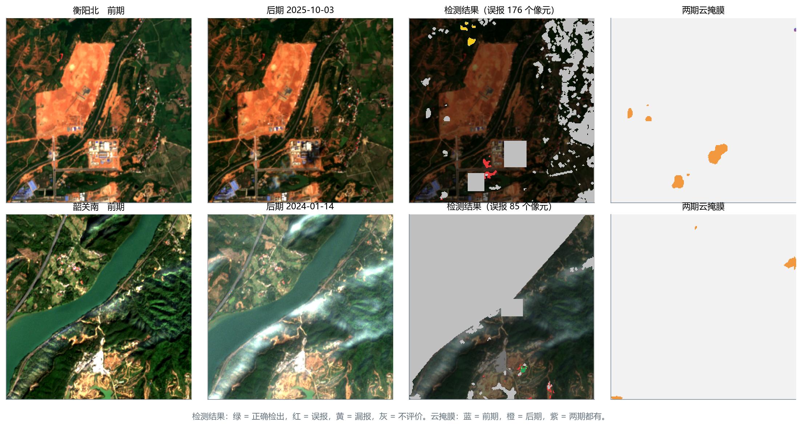
（4）模型不够强不是主要原因。三条证据：2023 年的两个折上 F1 已达 0.80—0.84；两条完全不同的路线（直接检测 0.703、先分类后比较 0.736）成绩相近，漏掉的多是同一批变化；结构更复杂的近期网络在本数据上都没有超过它们。限制主要来自 10 米分辨率下的小目标与边界、少数受云边和云影影响的影像对，以及弱变化本身。
4.2 误报从哪里来
全部误报 1,140 个像元中，紧挨标注变化（2 个像元以内）的占 29%，即“边界画大了”；其余 71%（123 个斑块）为孤立误报。孤立误报高度集中：最多的 5 个影像对占 49%。去掉云掩膜外扩 150 米以内的报警，误报减少 23%，说明近四分之一的误报贴着云区。
云边缓冲的尝试。在两条路线最终方案的测试结果上，去掉云掩膜外扩一定距离以内的报警（表 30，50 米为事先定的主设置，只用本影像对两期的云掩膜）。两条路线都只有小幅提高；用开源云检测模型 OmniCloudMask 生成的云掩膜与人工掩膜高度一致（IoU 0.88），两者合并再缓冲也没有额外提升。说明云体本身已经掩得够好，剩下的主要是云影，需要专门的云影检测。这里的“人工掩膜”指判读时在场景分类云掩膜基础上人工补圈的云区。
表 30 不重训的后处理：云边缓冲（各路线最终方案的测试预测，3 个种子平均；F1 差的区间同时重抽种子与测试影像对；判据事先定：误报降 ≥ 20% 且召回损失 ≤ 0.02）
| 路线 | 做法 | F1 | 与原方案之差（95% 区间） | 召回变化 | 误报降幅 | 满足判据 |
|---|---|---|---|---|---|---|
| 先分类后比较（最终方案） | 原方案 | 0.736 | — | — | — | — |
| 云边缓冲 50 米 | 0.741 | +0.005（+0.001 至 +0.015） | −0.000 | 10% | 否 | |
| 云边缓冲 150 米 | 0.744 | +0.008（−0.005 至 +0.024） | −0.008 | 23% | 是 | |
| 人工 + 标准云掩膜（OmniCloudMask）缓冲 50 米 | 0.741 | +0.005（+0.001 至 +0.015） | −0.000 | 10% | 否 | |
| 直接检测（OlmoEarth + 指数差） | 原方案 | 0.703 | — | — | — | — |
| 云边缓冲 50 米 | 0.707 | +0.004（+0.000 至 +0.014） | −0.001 | 7% | 否 | |
| 云边缓冲 150 米 | 0.709 | +0.006（−0.009 至 +0.026） | −0.012 | 19% | 否 | |
| 人工 + 标准云掩膜（OmniCloudMask）缓冲 50 米 | 0.707 | +0.004（−0.002 至 +0.014） | −0.003 | 8% | 否 |
注：只用本影像对前后两期的云掩膜，不用后期之后的任何影像。50 米缓冲是开跑前定的，其余为敏感性分析；这些后处理还没有并入最终方案。
4.3 困难的变化类型与区域
- 类内变化。两期地物类别相同的真实变化，召回率先分类后比较为 0.569、直接检测为 0.513，明显低于类别转移变化（0.836、0.834）。林地疏伐、工地再次开挖的光谱差异小，是弱变化的主体。
- 河岸带。距水陆分界 3 个像元以内的 F1，先分类后比较为 0.509、直接检测为 0.461，河岸带外为 0.755、0.726。水位涨落、水边混合像元和水色变化在 10 米分辨率下难以与真实变化区分；“水域增加”类的召回率在直接检测中只有 0.12。
- 株洲南。测试期变化像元少（552 个）、小目标多，两条路线在这个测点上都最差。
4.4 方法与评价中值得改进的地方
- 方案选择用到了测试期成绩。本研究在每一步按测试期 F1 选方案，42 项特征的精简也参考了测试期成绩。验证集太小（含变化的影像对每折只有 1—8 个）是这样做的原因，但它使报告的成绩偏乐观。改进：把当前方案冻结，用此后新获取的时段和新的测点做一次性的独立评价；在公开数据集上用同一流程复核。
- 只检验了按时间外推，没有检验换测点。数据诊断显示，地形、多年地表统计、离铁路距离在换测点时判别力低于随机，说明它们在同测点内的增益可能部分来自记住位置。改进：做留一测点的交叉验证（两个测点训练、第三个测点测试），这是推广到全线前必须回答的问题。
- 评价规模小，区间宽。前两个折分别只有 6 个和 4 个测试影像对含有变化，一个影像对就能左右该折的 F1，同一路线内 0.05 以下的差别通常分不出高低。改进：扩充含变化的影像对（台账事件、更多测点），按变化区而不只按像元评价。
- 辅助数据的用法不规范。本研究把辅助数据直接作为网络输入，而成熟系统把质量信息用作掩膜或权重、DEM 用于光照校正、历史观测用来定义“正常范围”（2.5.2 节）。改进：按规范用法重做季节模型（CCDC 规范的稳定段拟合与连续异常确认），质量信息改作掩膜或样本权重。
- 跨方法的训练训练设置不完全统一。同一方法“加 / 不加指数差”是严格对照，但不同方法之间的学习率和难负样本设置不同（表 7），跨方法的差别不全是结构造成的。改进：对排名靠前的几种方法统一训练设置重跑。
- 自标自评。变化标注由 AI 预标、人工复核得到，评价也用这套标注，缺少独立参考。改进：用高分辨率影像独立核对一部分标注，估计标注本身的误差（5.1 节）。
5 接下来要做的事情
5.1 高分辨率影像：独立核对与小目标
为什么需要。第 4 章的诊断指出三处要靠更高分辨率才能回答的问题：（1）标注是自标自评，需要独立参考来估计标注本身的误差；（2）约 0.08 的 F1 损失来自变化区边界，1—3 个像元的小目标几乎检测不到，需要知道其中有多少是真实变化、有多少是标注不确定；（3）10 米影像上判为“看不出”的区域（不参与评价），需要知道它们实际上有没有变化。
采购方案。已在吉林一号遥感商城实查三个测点的存档（云量不超过 20%、侧摆不超过 15°、完整覆盖测点），按商城计价接口选出 93 景拍摄满 90 天的存档影像（0.5 米 56 景、亚米 37 景），分三个订单（尚未下单）。选片按三条规则：
- 变化核实：每个含变化或含“看不出”区域的 Sentinel-2 影像对，在前期之前、后期之后 45 天内各找一景，核实“原来是什么、变成了什么”；
- 季度底图：2021 年第 3 季度到 2026 年第 2 季度每个测点每季至少一景，作为地物分割的高分参考和河岸季节进退的参照；
- 剩余预算按 Sentinel-2 变化多的季度补充。
建议先买第 1 条中覆盖测试期的部分，用来做下面的实验；其余按结果决定。
实验设计。
| 实验 | 做法 | 回答的问题 |
|---|---|---|
| 标注误差估计 | 在高分影像上独立判读测试期的变化区和随机抽取的未变区，与 10 米标注逐区比较 | 10 米标注的精确率、召回率；“看不出”区域中真实变化的比例 |
| 边界与小目标 | 把高分影像上勾绘的变化区降采样到 10 米网格，按面积占比给出每个像元的变化比例，重算按面积加权的 F1 | 0.08 的边界损失中有多少是标注边界的不确定 |
| 方法评价换成独立参考 | 用高分判读的结果重新评价两条路线的最终方案 | 换成独立参考后，方法排序和成绩是否不变 |
5.2 台账事件：从测点推广到全线
已有基础。台账是铁路部门记录沿线隐患和施工事件的清单。已对台账事件观察窗口（事件前后最近的影像）逐一目视判读（窗口数与可见数只在内部版），台账中的大多数事件在 Sentinel-2 上不可见，评价时必须先区分“可见事件”和“不可见事件”。
实验设计。
- 冻结方案、只做推理。把两条路线的最终方案原样冻结，对全部台账窗口推理，不再用台账数据调参，这同时是 4.4 节第 1 点要求的独立评价。
- 事件级评价。以事件为单位：在事件位置周围一定范围、事件日期前后一定时段内有报警即算检出；另统计每公里线路每月的报警数，衡量核查工作量。可见事件和不可见事件分开报告。
- 分层分析。按事件类型（施工、边坡、水害等）、事件规模和地物背景分层，找出哪些事件类型适合用 Sentinel-2 监测、哪些必须靠高分辨率影像或现场。
- 不可见事件的高分核对。对不可见事件抽样购买高分影像，判断是“10 米看不见”还是“事件本身没有地表表现”。
- 事前线索。只用事件之前的影像，检验事件发生前是否已有可检测的地表变化（例如边坡附近的清表、取土），评估提前预警的可能。
5.3 发表论文的方向
目标期刊可选 Remote Sensing of Environment、ISPRS Journal of Photogrammetry and Remote Sensing、IEEE TGRS、International Journal of Applied Earth Observation and Geoinformation。顶级期刊要求问题有一般性、结论在公开数据上可复现、对比充分。基于现有工作，有三个方向值得考虑：
方向一：历史信息让地图更准，却让变化“消失”。本研究发现，加入多年地表统计后分割精度明显提高（mIoU 0.779 → 0.803），但真实变化像元在两期分割图上被分成不同类的比例从 78% 降到 61%——网络在真实变化处倾向于沿用历史类别，分割越“稳定”，变化越难被发现。这一“稳定性—变化保持”的取舍在先分类后比较中普遍存在，但很少被系统研究。可以研究历史信息应当以什么方式进入（作为“答案”的状态先验，还是作为“参照”的正常范围或转移概率），并在 DynamicEarthNet 等公开时序数据上复现。
方向二：中分辨率、短重访、稀有变化条件下的变化检测基准。公开数据集多为高分辨率、两期相隔数年、以建筑为主（1.2 节）；而业务监测更常见的是 10 米、每周一次、变化极其稀少且多为类内扰动。可以整理本研究数据（按时间划分、含类内变化和“看不出”区域标记），在其上系统评测十余种方法和遥感基础模型，给出“高分数据上的排名不能搬到中分辨率”的定量证据。数据公开需要先确认铁路部门的许可。
方向三：遥感基础模型 + 光谱领域知识的轻量注入。本研究中，把光谱指数差以零初始化的多尺度相加注入 OlmoEarth 解码器，F1 提高 0.043（区间下界只有 +0.004，而且这一融合方式是按测试期成绩选出的），以输出端接入则没有提高；结论还需要独立数据确认。可以在 OSCD、DynamicEarthNet 的 Sentinel-2 版本等公开数据上检验这一做法是否普遍成立，并与其他基础模型比较。
无论哪个方向，都需要补的工作：（1）在至少一个公开数据集上用同一流程复现主要结论；（2）留一测点的交叉验证；（3）冻结方案后的独立时段评价；（4）跨方法统一训练训练设置；（5）对关键结论报告多个种子的均值和区间。
5.4 还没有尝试、值得尝试的改进
下表按“预计收益 / 工作量”排列。前两类针对第 4 章找到的主要瓶颈（召回不足、云边云影、小目标与边界），第三类是辅助数据中还没有按最新、最规范方法处理的部分。
表 31 尚未尝试的改进
| 类别 | 改进 | 针对的问题 | 做法要点 |
|---|---|---|---|
| 数据与评价 | 留一测点的交叉验证 | 结论能否推广到新测点 | 两个测点训练、第三个测点测试，三轮轮换 |
| 数据与评价 | 冻结方案的独立评价 | 方案选择用过测试期成绩 | 用台账事件和此后新时段做一次性评价（5.2 节） |
| 数据与评价 | 高分辨率独立参考 | 自标自评、边界不确定 | 见 5.1 节 |
| 主要瓶颈 | 专门的云影检测与掩膜 | 误报集中在云边、云影 | 云体按太阳方位和云高投影出云影；或训练云影分割模型，代替只靠场景分类 |
| 主要瓶颈 | 边界容忍的损失与评价 | 约 0.09 的 F1 损失在边界 | 训练时对标注边界 1 个像元降权；按面积占比的软标签 |
| 主要瓶颈 | 多期影像输入（时间序列模型） | 弱变化、类内变化召回低 | 输入前期之前的若干期影像（只用过去），用 U-TAE、TSViT 或 OlmoEarth 的多时相输入，让模型知道“这里平时什么样” |
| 主要瓶颈 | 半监督与伪标签 | 含变化的影像对只有约 100 个 | 用最终方案在未标注的影像对上生成高置信伪标签再训练 |
| 主要瓶颈 | 合成变化样本 | 同上 | 按 Changen2 [74] 等方法把真实变化斑块粘贴到其他影像对上 |
| 主要瓶颈 | 基础模型全参数微调、更大的模型 | 模型容量 | OlmoEarth Large、全参数微调（需更多显存，过拟合风险需要验证） |
| 辅助数据 | 季节模型改为 CCDC 规范版 | 第 1 版与规范有四处偏离 | 稳定段拟合、按观测数确定谐波阶数、逐像元 RMSE、连续异常确认（只用过去） |
| 辅助数据 | 雷达多时相基线 | 两景差值噪声大 | 多期去斑，建立每个像元的后向散射正常范围，只用持续偏离 |
| 辅助数据 | 相干性只用于高相干区 | 植被区相干性本来就低 | 只在裸地、建成区（往年相干性高的像元）启用，其余记缺失 |
| 辅助数据 | 地形与光照用于校正 | 当前直接当特征，换测点失效 | 用 DEM 做光照（地形）校正后再计算指数差，不再作为网络输入 |
| 辅助数据 | 成像质量用于样本权重和掩膜 | 当前把影像对级常数当特征 | 云边、薄雾、耀斑处降低训练权重，评价时分层报告 |
6 结论
- 两条路线在同一套数据、标注、时间划分和评价方法下完成了系统比较。先分类后比较（D2LS 读 12 个波段 + 多年地表统计分割、候选像元、LightGBM 变化检测头）F1 为 0.736，是最终方法；直接检测（OlmoEarth + 光谱指数差多尺度相加）为 0.703。
- 直接检测：遥感基础模型 + 光谱指数差最有效。在 10 米、数百个影像对的条件下，近两年在高分辨率数据上领先的方法都低于读 12 个波段预训练的 OlmoEarth；光谱指数差对多数方法有帮助，融合方式也有影响；经典无监督方法不可用。
- 先分类后比较：分割之后必须有变化检测头。只用分类结果的传统方法（PCC、CVAPS）和文献中的 3 项特征随机森林都不可用；读取光谱、邻域和概率等特征的 LightGBM 变化检测头删掉了两期分割边界不一致造成的假转移，并补回了前后类别相同的真实变化。
- 辅助数据：按直接输入网络的用法，没有一项带来可以确认的提高。多年地表统计提高了分割精度（主要帮助区分耕地与植被），但没有带来检测的提高；雷达振幅和干涉相干性能看见的变化很少。
- 精度主要受 10 米分辨率下的小目标与边界、少数受云边云影影响的影像对和弱变化本身限制，而不是模型不够强。下一步用高分辨率影像做独立核对，用台账事件做冻结方案的全线评价。
参考文献
[1] YANG K, XIA G S, LIU Z, et al. Asymmetric siamese networks for semantic change detection in aerial images[J]. IEEE Transactions on Geoscience and Remote Sensing, 2022, 60: 5609818.
[2] FOODY G M. Monitoring the magnitude of land-cover change around the southern limits of the Sahara[J]. Photogrammetric Engineering & Remote Sensing, 2001, 67(7): 841-847.
[3] BROWN J F, TOLLERUD H J, BARBER C P, et al. Lessons learned implementing an operational continuous United States national land change monitoring capability: the Land Change Monitoring, Assessment, and Projection (LCMAP) approach[J]. Remote Sensing of Environment, 2020, 238: 111356.
[4] BULLOCK E L, WOODCOCK C E, SOUZA C, et al. Satellite-based estimates reveal widespread forest degradation in the Amazon[J]. Global Change Biology, 2020, 26(5): 2956-2969.
[5] MALILA W A. Change vector analysis: an approach for detecting forest changes with Landsat[C]//Proceedings of the Symposium on Machine Processing of Remotely Sensed Data. West Lafayette: Purdue University, 1980: 326-335.
[6] SINGH A. Digital change detection techniques using remotely-sensed data[J]. International Journal of Remote Sensing, 1989, 10(6): 989-1003.
[7] NIELSEN A A. The regularized iteratively reweighted MAD method for change detection in multi- and hyperspectral data[J]. IEEE Transactions on Image Processing, 2007, 16(2): 463-478.
[8] DAUDT R C, LE SAUX B, BOULCH A. Fully convolutional siamese networks for change detection[C]//2018 25th IEEE International Conference on Image Processing (ICIP). 2018: 4063-4067.
[9] FANG S, LI K, SHAO J, et al. SNUNet-CD: a densely connected siamese network for change detection of VHR images[J]. IEEE Geoscience and Remote Sensing Letters, 2022, 19: 8007805.
[10] CHEN H, QI Z, SHI Z. Remote sensing image change detection with transformers[J]. IEEE Transactions on Geoscience and Remote Sensing, 2022, 60: 5607514.
[11] BANDARA W G C, PATEL V M. A transformer-based siamese network for change detection[C]//IGARSS 2022 IEEE International Geoscience and Remote Sensing Symposium. 2022: 207-210.
[12] FANG S, LI K, LI Z. Changer: feature interaction is what you need for change detection[J]. IEEE Transactions on Geoscience and Remote Sensing, 2023, 61: 5610111.
[13] CHEN H, SONG J, HAN C, et al. ChangeMamba: remote sensing change detection with spatiotemporal state space model[J]. IEEE Transactions on Geoscience and Remote Sensing, 2024, 62: 4409720.
[14] SZWARCMAN D, ROY S, FRACCARO P, et al. Prithvi-EO-2.0: a versatile multi-temporal foundation model for Earth observation applications[EB/OL]. arXiv:2412.02732, 2024.
[15] JAKUBIK J, YANG F, BLUMENSTIEL B, et al. TerraMind: large-scale generative multimodality for Earth observation[C]//Proceedings of the IEEE/CVF International Conference on Computer Vision (ICCV). 2025.
[16] Allen Institute for AI. OlmoEarth: open foundation models for Earth observation[EB/OL]. 2025. https://allenai.org/olmoearth.
[17] SIMÉONI O, VO H V, SEITZER M, et al. DINOv3[EB/OL]. arXiv:2508.10104, 2025.
[18] RAVI N, GABEUR V, HU Y T, et al. SAM 2: segment anything in images and videos[C]//International Conference on Learning Representations (ICLR). 2025.
[19] DONG S, HU Y, WANG L, et al. PeftCD: leveraging vision foundation models with parameter-efficient fine-tuning for remote sensing change detection[EB/OL]. arXiv:2509.09572, 2025. https://arxiv.org/abs/2509.09572.
[20] DAUDT R C, LE SAUX B, BOULCH A, et al. Urban change detection for multispectral earth observation using convolutional neural networks[C]//IGARSS 2018 IEEE International Geoscience and Remote Sensing Symposium. 2018: 2115-2118.
[21] CORLEY I, ROBINSON C, ORTIZ A. A change detection reality check[EB/OL]. ICLR 2024 Workshop on Machine Learning for Remote Sensing. arXiv:2402.06994, 2024.
[22] HU E J, SHEN Y, WALLIS P, et al. LoRA: low-rank adaptation of large language models[C]//International Conference on Learning Representations (ICLR). 2022.
[23] ZHU D, et al. ChangeViT: unleashing plain vision transformers for change detection[J]. Pattern Recognition, 2026. DOI: 10.1016/j.patcog.2025.112539.
[24] PEREZ E, STRUB F, DE VRIES H, et al. FiLM: visual reasoning with a general conditioning layer[C]//Proceedings of the AAAI Conference on Artificial Intelligence. 2018, 32(1): 3942-3951.
[25] AREVALO J, SOLORIO T, MONTES-Y-GÓMEZ M, et al. Gated multimodal units for information fusion[EB/OL]. ICLR 2017 Workshop. arXiv:1702.01992, 2017.
[26] ZHANG J, LIU H, YANG K, et al. CMX: cross-modal fusion for RGB-X semantic segmentation with transformers[J]. IEEE Transactions on Intelligent Transportation Systems, 2023, 24(12): 14679-14694.
[27] MILLETARI F, NAVAB N, AHMADI S A. V-Net: fully convolutional neural networks for volumetric medical image segmentation[C]//2016 Fourth International Conference on 3D Vision (3DV). 2016: 565-571.
[28] TOWNSHEND J R G, JUSTICE C O, GURNEY C, et al. The impact of misregistration on change detection[J]. IEEE Transactions on Geoscience and Remote Sensing, 1992, 30(5): 1054-1060.
[29] DAI X, KHORRAM S. The effects of image misregistration on the accuracy of remotely sensed change detection[J]. IEEE Transactions on Geoscience and Remote Sensing, 1998, 36(5): 1566-1577.
[30] TUCKER C J. Red and photographic infrared linear combinations for monitoring vegetation[J]. Remote Sensing of Environment, 1979, 8(2): 127-150.
[31] MCFEETERS S K. The use of the normalized difference water index (NDWI) in the delineation of open water features[J]. International Journal of Remote Sensing, 1996, 17(7): 1425-1432.
[32] XU H. Modification of normalised difference water index (NDWI) to enhance open water features in remotely sensed imagery[J]. International Journal of Remote Sensing, 2006, 27(14): 3025-3033.
[33] RIKIMARU A, ROY P S, MIYATAKE S. Tropical forest cover density mapping[J]. Tropical Ecology, 2002, 43(1): 39-47.
[34] European Space Agency. Copernicus DEM: global and European digital elevation model (COP-DEM GLO-30)[EB/OL]. 2021. https://doi.org/10.5270/ESA-c5d3d65.
[35] PONTIUS R G, MILLONES M. Death to Kappa: birth of quantity disagreement and allocation disagreement for accuracy assessment[J]. International Journal of Remote Sensing, 2011, 32(15): 4407-4429.
[36] FOODY G M. Explaining the unsuitability of the kappa coefficient in the assessment and comparison of the accuracy of thematic maps obtained by image classification[J]. Remote Sensing of Environment, 2020, 239: 111630.
[37] JENSEN J R. Introductory digital image processing: a remote sensing perspective[M]. 4th ed. Glenview: Pearson, 2015.
[38] COPPIN P, JONCKHEERE I, NACKAERTS K, et al. Digital change detection methods in ecosystem monitoring: a review[J]. International Journal of Remote Sensing, 2004, 25(9): 1565-1596.
[39] DAUDT R C, LE SAUX B, BOULCH A, et al. Multitask learning for large-scale semantic change detection[J]. Computer Vision and Image Understanding, 2019, 187: 102783.
[40] DING L, GUO H, LIU S, et al. Bi-temporal semantic reasoning for the semantic change detection in HR remote sensing images[J]. IEEE Transactions on Geoscience and Remote Sensing, 2022, 60: 5620014.
[41] ZOU X, et al. Dynamic dictionary learning for remote sensing image segmentation[C]//Proceedings of the IEEE/CVF International Conference on Computer Vision (ICCV). 2025. arXiv:2503.06683.
[42] LIU Z, MAO H, WU C Y, et al. A ConvNet for the 2020s[C]//Proceedings of the IEEE/CVF Conference on Computer Vision and Pattern Recognition (CVPR). 2022: 11976-11986.
[43] FRIEDMAN J H. Greedy function approximation: a gradient boosting machine[J]. The Annals of Statistics, 2001, 29(5): 1189-1232.
[44] GRINSZTAJN L, OYALLON E, VAROQUAUX G. Why do tree-based models still outperform deep learning on typical tabular data?[C]//Advances in Neural Information Processing Systems (NeurIPS) Datasets and Benchmarks Track. 2022.
[45] XIE E, WANG W, YU Z, et al. SegFormer: simple and efficient design for semantic segmentation with transformers[C]//Advances in Neural Information Processing Systems (NeurIPS). 2021: 12077-12090.
[46] Meta AI. SAM 3: segment anything with concepts[EB/OL]. 2025. https://ai.meta.com/sam3.
[47] LIU Z, HU H, LIN Y, et al. Swin Transformer V2: scaling up capacity and resolution[C]//Proceedings of the IEEE/CVF Conference on Computer Vision and Pattern Recognition (CVPR). 2022: 12009-12019.
[48] RONNEBERGER O, FISCHER P, BROX T. U-Net: convolutional networks for biomedical image segmentation[C]//Medical Image Computing and Computer-Assisted Intervention (MICCAI). 2015: 234-241.
[49] KE G, MENG Q, FINLEY T, et al. LightGBM: a highly efficient gradient boosting decision tree[C]//Advances in Neural Information Processing Systems (NeurIPS). 2017: 3146-3154.
[50] CHEN T, GUESTRIN C. XGBoost: a scalable tree boosting system[C]//Proceedings of the 22nd ACM SIGKDD International Conference on Knowledge Discovery and Data Mining. 2016: 785-794.
[51] PROKHORENKOVA L, GUSEV G, VOROBEV A, et al. CatBoost: unbiased boosting with categorical features[C]//Advances in Neural Information Processing Systems (NeurIPS). 2018: 6638-6648.
[52] BREIMAN L. Random forests[J]. Machine Learning, 2001, 45(1): 5-32.
[53] BROWN C F, BRUMBY S P, GUZDER-WILLIAMS B, et al. Dynamic World, near real-time global 10 m land use land cover mapping[J]. Scientific Data, 2022, 9: 251.
[54] TOKER A, KONDMANN L, WEBER M, et al. DynamicEarthNet: daily multi-spectral satellite dataset for semantic change segmentation[C]//Proceedings of the IEEE/CVF Conference on Computer Vision and Pattern Recognition (CVPR). 2022: 21158-21167.
[55] WIJENAYAKE B, RATNAYAKE A, SUMANASEKARA P, et al. Mamba-FCS: joint spatio-frequency feature fusion, change-guided attention, and SeK inspired loss for enhanced semantic change detection in remote sensing[J]. IEEE Journal of Selected Topics in Applied Earth Observations and Remote Sensing, 2026. DOI: 10.1109/JSTARS.2026.3663066.
[56] ZHU D, HUANG X, HUANG H, et al. Change3D: revisiting change detection and captioning from a video modeling perspective[C]//Proceedings of the IEEE/CVF Conference on Computer Vision and Pattern Recognition (CVPR). 2025: 24011-24022.
[57] CHEN J, CHEN X, CUI X, et al. Change vector analysis in posterior probability space: a new method for land cover change detection[J]. IEEE Geoscience and Remote Sensing Letters, 2011, 8(2): 317-321.
[58] ZAKERI F, HUANG B, SARADJIAN M R. Fusion of change vector analysis in posterior probability space and postclassification comparison for change detection from multispectral remote sensing data[J]. Remote Sensing, 2019, 11(13): 1511.
[59] DING L, ZHANG J, GUO H, et al. Joint spatio-temporal modeling for semantic change detection in remote sensing images[J]. IEEE Transactions on Geoscience and Remote Sensing, 2024, 62: 1-14.
[60] ZHANG H, GUO H, CHEN K, et al. FoBa: a foreground-background co-guided method and new benchmark for remote sensing semantic change detection[J]. IEEE Transactions on Geoscience and Remote Sensing, 2025, 63: 5653919.
[61] ZHENG Z, MA A, ZHANG L, et al. Change is everywhere: single-temporal supervised object change detection in remote sensing imagery[C]//Proceedings of the IEEE/CVF International Conference on Computer Vision (ICCV). 2021: 15193-15202.
[62] ZHENG Z, ZHONG Y, ZHANG L, et al. Segment any change[C]//Advances in Neural Information Processing Systems (NeurIPS). 2024.
[63] MARSOCCI V, JIA Y, LE BELLIER G, et al. PANGAEA: a global and inclusive benchmark for geospatial foundation models[EB/OL]. arXiv:2412.04204, 2024.
[64] EBEL P, SAHA S, ZHU X X. Fusing multi-modal data for supervised change detection[J]. The International Archives of the Photogrammetry, Remote Sensing and Spatial Information Sciences, 2021, XLIII-B3-2021: 243-249.
[65] BERNHARD M, STRAUSS N, SCHUBERT M. MapFormer: boosting change detection by using pre-change information[C]//Proceedings of the IEEE/CVF International Conference on Computer Vision (ICCV). 2023: 16837-16846.
[66] ZHU Z, WOODCOCK C E. Continuous change detection and classification of land cover using all available Landsat data[J]. Remote Sensing of Environment, 2014, 144: 152-171.
[67] OPERA Project, Jet Propulsion Laboratory. Product specification document for the OPERA land surface disturbance alert from Harmonized Landsat and Sentinel-2 (DIST-ALERT-HLS)[EB/OL]. 2023.
[68] HANDWERGER A L, HUANG M H, JONES S Y, et al. Generating landslide density heatmaps for rapid detection using open-access satellite radar data in Google Earth Engine[J]. Natural Hazards and Earth System Sciences, 2022, 22(3): 753-773.
[69] MEYER H, REUDENBACH C, WÖLLAUER S, et al. Importance of spatial predictor variable selection in machine learning applications: moving from data reproduction to spatial prediction[J]. Ecological Modelling, 2019, 411: 108815.
[70] NEVEROVA N, WOLF C, TAYLOR G, et al. ModDrop: adaptive multi-modal gesture recognition[J]. IEEE Transactions on Pattern Analysis and Machine Intelligence, 2016, 38(8): 1692-1706.
[71] DING L, ZHU K, PENG D, et al. Adapting segment anything model for change detection in VHR remote sensing images[J]. IEEE Transactions on Geoscience and Remote Sensing, 2024, 62: 5611711.
[72] DONG S, WANG L, DU B, et al. ChangeCLIP: remote sensing change detection with multimodal vision-language representation learning[J]. ISPRS Journal of Photogrammetry and Remote Sensing, 2024, 208: 53-69.
[73] CHEN H, SHI Z. A spatial-temporal attention-based method and a new dataset for remote sensing image change detection[J]. Remote Sensing, 2020, 12(10): 1662.
[74] ZHENG Z, ERMON S, KIM D, et al. Changen2: multi-temporal remote sensing generative change foundation model[J]. IEEE Transactions on Pattern Analysis and Machine Intelligence, 2025.
[75] BANDARA W G C, NAIR N G, PATEL V M. DDPM-CD: denoising diffusion probabilistic models as feature extractors for remote sensing change detection[C]//Proceedings of the IEEE/CVF Winter Conference on Applications of Computer Vision (WACV). 2025.
[76] ZHANG H, CHEN K, LIU C, et al. CDMamba: incorporating local clues into Mamba for remote sensing image binary change detection[J]. IEEE Transactions on Geoscience and Remote Sensing, 2025, 63.
[77] JIN S, HOMER C, YANG L, et al. Overall methodology design for the United States National Land Cover Database 2016 products[J]. Remote Sensing, 2019, 11(24): 2971.
[78] HEALEY S P, COHEN W B, YANG Z, et al. Mapping forest change using stacked generalization: an ensemble approach[J]. Remote Sensing of Environment, 2018, 204: 717-728.
[79] 自然资源部. 国土变更调查技术规程（2024 年度适用）[S]. 2024.
[80] JI S, WEI S, LU M. Fully convolutional networks for multisource building extraction from an open aerial and satellite imagery data set[J]. IEEE Transactions on Geoscience and Remote Sensing, 2019, 57(1): 574-586.
[81] SHEN L, LU Y, CHEN H, et al. S2Looking: a satellite side-looking dataset for building change detection[J]. Remote Sensing, 2021, 13(24): 5094.
[82] SHI Q, LIU M, LI S, et al. A deeply supervised attention metric-based network and an open aerial image dataset for remote sensing change detection[J]. IEEE Transactions on Geoscience and Remote Sensing, 2022, 60: 5604816.
[83] YUAN P, ZHAO Q, ZHAO X, et al. A transformer-based Siamese network and an open optical dataset for semantic change detection of remote sensing images[J]. International Journal of Digital Earth, 2022, 15(1): 1506-1525.
[84] VAN ETTEN A, HOGAN D, MANSO J M, et al. The multi-temporal urban development SpaceNet dataset[C]//Proceedings of the IEEE/CVF Conference on Computer Vision and Pattern Recognition (CVPR). 2021: 6398-6407.
[85] CAO H, WANG Y, CHEN J, et al. Swin-Unet: Unet-like pure transformer for medical image segmentation[C]//European Conference on Computer Vision Workshops (ECCVW). 2022: 205-218.
[86] WANG L, LI R, ZHANG C, et al. UNetFormer: a UNet-like transformer for efficient semantic segmentation of remote sensing urban scene imagery[J]. ISPRS Journal of Photogrammetry and Remote Sensing, 2022, 190: 196-214.
[87] HAZIRBAS C, MA L, DOMOKOS C, et al. FuseNet: incorporating depth into semantic segmentation via fusion-based CNN architecture[C]//Asian Conference on Computer Vision (ACCV). 2016: 213-228.
[88] ZHANG L, RAO A, AGRAWALA M. Adding conditional control to text-to-image diffusion models[C]//Proceedings of the IEEE/CVF International Conference on Computer Vision (ICCV). 2023: 3836-3847.
[89] DOSOVITSKIY A, BEYER L, KOLESNIKOV A, et al. An image is worth 16x16 words: transformers for image recognition at scale[C]//International Conference on Learning Representations (ICLR). 2021.
[90] VASWANI A, SHAZEER N, PARMAR N, et al. Attention is all you need[C]//Advances in Neural Information Processing Systems (NeurIPS). 2017: 5998-6008.
[91] LI K, CAO X, DENG Y, et al. DynamicEarth: how far are we from open-vocabulary change detection?[C]//Proceedings of the AAAI Conference on Artificial Intelligence. 2026. arXiv:2501.12931.
[92] ZHENG Z, ZHONG Y, TIAN S, et al. ChangeMask: deep multi-task encoder-transformer-decoder architecture for semantic change detection[J]. ISPRS Journal of Photogrammetry and Remote Sensing, 2022, 183: 228-239.
[93] IM J, JENSEN J R. A change detection model based on neighborhood correlation image analysis and decision tree classification[J]. Remote Sensing of Environment, 2005, 99(3): 326-340.
[94] HERMOSILLA T, WULDER M A, WHITE J C, et al. Regional detection, characterization, and attribution of annual forest change from 1984 to 2012 using Landsat-derived time-series metrics[J]. Remote Sensing of Environment, 2015, 170: 121-132.
[95] BRUZZONE L, PRIETO D F. Automatic analysis of the difference image for unsupervised change detection[J]. IEEE Transactions on Geoscience and Remote Sensing, 2000, 38(3): 1171-1182.
[96] OTSU N. A threshold selection method from gray-level histograms[J]. IEEE Transactions on Systems, Man, and Cybernetics, 1979, 9(1): 62-66.
[97] FENG D, HAASE-SCHÜTZ C, ROSENBAUM L, et al. Deep multi-modal object detection and semantic segmentation for autonomous driving: datasets, methods, and challenges[J]. IEEE Transactions on Intelligent Transportation Systems, 2021, 22(3): 1341-1360.
[98] GORISHNIY Y, KOTELNIKOV A, BABENKO A. TabM: advancing tabular deep learning with parameter-efficient ensembling[C]//International Conference on Learning Representations (ICLR). 2025.
[99] HE K, ZHANG X, REN S, et al. Deep residual learning for image recognition[C]//Proceedings of the IEEE Conference on Computer Vision and Pattern Recognition (CVPR). 2016: 770-778.
附录
附录 A 验证集选阈值的成绩
表 32 固定概率 0.5 与验证集选阈值两种判定方式下的测试成绩（F1）
| 配置 | 固定 0.5 | 验证集选阈值 | 差 |
|---|---|---|---|
| OlmoEarth（不加辅助数据） | 0.659 | 0.651 | −0.008 |
| + 光谱指数差（末端拼接融合） | 0.672 | 0.661 | −0.012 |
| + 光谱指数差（FiLM） | 0.695 | 0.633 | −0.062 |
| + 18 层（末端拼接融合） | 0.661 | 0.635 | −0.026 |
| + 18 层（FiLM） | 0.687 | 0.603 | −0.084 |
| + 光谱指数差（多尺度相加） | 0.703 | 0.645 | −0.058 |
| U-Net 早融合 | 0.576 | 0.551 | −0.025 |
| TerraMind | 0.307 | 0.436 | +0.129 |
| 先分类后比较最终方案 | 0.736 | 0.715 | −0.021 |
附录 B 各类辅助数据的作用汇总
表 33 各类辅助数据在三处的作用汇总（直接检测为 F1 之差，对照为不加辅助数据，另注明的除外；分割为 mIoU 之差，对照为只读 12 个波段，当期光谱指数和相对前一期的指数差的对照为分割最终方案）
| 数据 | 直接检测 | 分割 | 变化检测头 | 最终方案是否采用 |
|---|---|---|---|---|
| 光谱指数差（6 层） | 末端拼接融合 +0.013；FiLM +0.035；多尺度相加 +0.043 | — | — | 直接检测最终方案的输入（多尺度相加） |
| 往年同期（7 层） | 末端拼接融合 +0.008；FiLM +0.022；FiLM 与指数差一起，比只接指数差 −0.026；多尺度相加与指数差一起，比只接指数差 −0.059 | mIoU +0.005 | — | 未采用 |
| 多年地表统计（7 层） | FiLM +0.006；FiLM 与指数差一起，比只接指数差 −0.001；多尺度相加与指数差一起，比只接指数差 −0.043 | mIoU +0.025 | — | 分割最终方案的输入；变化检测头最终方案保留其中 3 项（NDVI 10% 分位数、NDVI 90% 分位数、无云观测次数） |
| 地形（5 层） | 末端拼接融合 +0.010；FiLM −0.002；FiLM 与指数差一起，比只接指数差 −0.004；多尺度相加与指数差一起，比只接指数差 −0.047 | mIoU +0.005 | — | 变化检测头最终方案保留其中 1 项（相对高程） |
| 雷达（前后包夹、同一轨道，6 层） | 末端拼接融合 +0.008；FiLM −0.027；FiLM 与指数差一起，比只接指数差 −0.019 | — | — | 未采用 |
| 原生雷达（2 景 × 2 极化） | 末端拼接融合接指数差时再加，比不加 −0.010 | — | — | 未采用 |
| 逐期光照与阴影（6 层） | 末端拼接融合 +0.006；FiLM −0.024；FiLM 与指数差一起，比只接指数差 −0.047；多尺度相加与指数差一起，比只接指数差 −0.040 | — | — | 未采用 |
| 成像质量（15 层） | FiLM −0.006 | — | — | 未采用 |
| 真实拍摄日期（时间编码） | −0.017 | — | — | 未采用 |
| 前期之前 2 期影像（2 期 × 12 波段） | +0.008 | — | — | 未采用 |
| 当期无云标记（1 层） | — | mIoU −0.001 | — | 未采用 |
| 前一期影像（13 层） | — | mIoU +0.005 | — | 未采用 |
| 当期光谱指数（6 层） | — | mIoU +0.001 | — | 未采用 |
| 相对前一期的指数差（6 层） | — | mIoU +0.001 | — | 未采用 |
注：各项的 95% 区间、精确率与召回率见正文对应的表（表 11、表 13、表 11、表 20）。按 1.5 节的规则，与对照相差不到 0.005 视为持平；差值区间包含 0 时，现有数据尚不能确认差异。